Capítulo 1 Análisis estadístico de datos genómicos
En este práctico vamos trabajas con datos de genomas bacterianos, explorando las bases de la genómica comparativa y composicional. Nos vamos a auxiliar de un par de paquetes de R que contienen diversas funciones para el análisis de datos de este tipo, los paquetes seqinr y ade4. Los datos necesarios para realizar el práctico se encuentran en el siguiente link: https://mega.nz/file/d1ZmRDJK#McT-rqtzjZTlLmb3CoF7T0w_hgfiMtUBxQr8v2ISClg
Asegurate de bajar estos datos en un directorio que conozcas y al que tengas acceso.
library(seqinr)
library(ade4)1.1 Genómica composicional
Si bien todos los organismos derivan del mismo organismo ancestral (LUCA) y por lo tanto deben compartir ciertas características en sus genomas, los mismos evolucionan y son la base de las diferencias entre los distintos organismos. A nivel genómico la evolución se da por un conjunto de eventos como las mutaciones, las duplicaciones de genes y regiones, las inserciones y “deleciones” de secuencias nucleotídicas. Claramente, la mayor parte de estos eventos producen cambios importantes a nivel composicional de los genomas. Por ejemplo, las mutaciones pueden llevar a una acumulación de cambios completamente al azar en los genomas, o puede tener determinados tipos de sesgos que favorezcan que las mutaciones sean hacia determinadas bases (por ejemplo, mutaciones desde las bases A y T hacia las base G y C, recordar que en el ADN doble cadena A se aparea con T y C con G). Los eventos de duplicación génica, por otro lado, generan cierta libertad para que ambas evolucionen más libremente ya que en principio una de las dos secuencias sigue siendo funcional (hasta que también deje de serlo) y de esta forma se pueden explorar nuevas funciones para una de las dos secuencias.
En general, el conjunto de estos cambios hace que resulte interesante para entender las bases de la evolución en ambientes particulares, o aún en general, el conocimiento de las secuencias de los diferentes organismos y la comparación de las mismas. El estudio de las variaciones en la composición de los genomas es lo que se puede llamar Genómica Composicional y forma parte de la Genómica Comparativa. A continuación veremos el tema de la variación en composición, tanto desde el punto de vista de los nucleótidos, como de los codones en las secuencias codificantes y finalmente de los aminoácidos que forman las proteínas.
Contenido GC genómico, génico, correlaciones, GCskew
La proporción de bases guanina y citosina (G y C respectivamente) que componen una secuencia se conoce como el contenido GC de la misma, o G+C, o aún GC% (cuando expresado en porcentaje)3. Por las reglas de apareamiento de bases (A-T y G-C), no tiene importancia en la determinación de dicho contenido cual hebra del ADN se considera para el cálculo de esta proporción.
Reglas de Chargaff
Primera regla de paridad La primera regla sostiene que una molécula de ADN de doble cadena tiene a nivel global las siguientes igualdades en el porcentaje de bases:%A=%T y %G=%C. La validación rigurosa de la norma constituye la base del apareamiento de Watson-Crick de la doble hélice del ADN.
Segunda regla de paridad La segunda regla es que tanto %A∼%T y %G∼%C son válidos para cada una de las dos hebras de ADN. Esto describe solamente una caracterísstica global de la composición de bases en una sola hebra de ADN.
En principio, uno podría preguntarse cuál es la importancia de medir esta proporción en particular y no otra de las tres posibles combinaciones de dos bases distintas (hay 6 de estas combinaciones, pero como la frecuencia de las dos elegidas más la de las otras dos debe sumar 1, basta con calcular la mitad; v.gr. GC=1-AT). Es más, alguna de ellas resultan obviamente relevantes, como la proporción de purinas vs. pirimidinas (AG vs. CT). Entonces, ¿qué es lo que hace tan relevante al contenido GC de las secuencias?
Transiciones y Transversiones
Los cambios entre PURINAS (A y G) o entre PIRIMIDINAS (C y T) se llaman transiciones.
Los cambios de PURINAS a PRIDIMINAS, o al revés, se llaman transversiones.
Las transiciones son mucho más frecuentes que las transversiones.
Existen varias razones, como veremos más adelante, pero desde el punto de vista bioquímico, tal vez la más obvia sea la diferencia en el número de puentes de hidrógeno entre los apareamientos A-T y los G-C, dos para el primero y tres para el segundo, así como diferencias en el “stacking” resultante. Esto conduce directamente a importantes diferencias en las propiedades físicas de la doble hebra, por ejemplo el incremento en el “melting point” como función del contenido GC (Yakovchuk, Protozanova, and Frank-Kamenetskii 2006). Pero más importante aún, en secuencias codificantes el código genético (tanto el “universal” como todas sus variantes) establece un mapeo entre la secuencia de ADN y la proteína que será traducida a partir de la misma. Dada la estructura “redundante” del código genético, algunos aminoácidos presentan poca dependencia del contenido GC, mientras que otros se encuentran fuertemente asociados a este problema (ya que los codones correspondientes tienen un sesgo importante).
En la figura 1.1 se aprecia la tabla correspondiente al código genético universal (que claramente no es universal). Claramente, de acuerdo a los colores, que representan propiedades de los aminoácidos, los mismos se encuentran distribuidos en forma bastante organizada de acuerdo a las mismas. Cada columna marca una base diferente en segunda posición del codón (U, C, A, G). Por ejemplo, la tercera columna incluye los codones con segunda base A (adenina) y la misma codifica para aminoácidos mayormente codificados por duetos. La primera columna corresponde a codones con segunda base U (uracilo, correspondiente al ADN T) y codifica para aminoácidos apolares.
Alguna propiedades del código genético universal
2 Singletons (Met y Trp), 9 Duetos (Phe, Tyr, His, Gln, Asn, Lys, Asp, Glu, Cys), 1 Terceto (Ile), 5 Cuartetos (Val, Pro, Thr, Ala, Gly) y 3 Sextetos (Leu, Ser, Arg)
La tercera columna (A en segunda base) codifica duetos: 2/3 de los cambios en tercera base no son sinónimos.
La primera base del codón es muy conservada: cambio de bloque-fila implica en general cambio de aminoácido, excepto en sextetos Arg y Leu.
La segunda base del codón es la más conservada: cambio de columna implica cambio de aminoácido
La tercera base es la más neutra y por lo tanto menos conservada (rol de los cuartetos). Los cambios de aminoácidos (de cuál a cuál) no son todos equivalentes en su impacto: hay cambios conservativos y otros disruptivos.
Entre los aminoácidos codificados por codones con sesgo GC(AT) tenemos Phe (5 A/T en 6 posiciones), Ile (8 A/T en 9) y Tyr (5 A/T en 6). Por ejemplo, en el genoma de Buchnera aphidicola str. Cc (Cinara cedri), una bacteria parásita intracelular obligada con contenido GC de 20.1%, mientras que en la proteína con mayor contenido GC del genoma (36.7%) el uso de estos 3 aminoácidos corresponde al 16%, en la proteína con menor contenido GC (8.6%) el uso de los mismos sube a 48%. Estas diferencias no tendrían de por sí una consecuencia necesaria a nivel de diferencias entre organismos ya que de hecho el contenido GC podría ser la simple consecuencia de los aminoácidos constituyentes de las proteínas y no al revés. Es decir, la distribución del contenido GC de las proteínas de un organismo sería solo el reflejo de la constitución de las mismas.
Figura 1.1: Tabla del código genético universal. En amarillo los aminoácidos apolares, en verdes los polares, azul básicos y rosa ácidos, con blanco correspondiendo a los codones de parada (de Wikipedia, https://es.wikipedia.org/wiki/Código_genético).
Sin embargo, de ser esto cierto esperaríamos que organismos con una
composición relativamente similar a nivel de las proteínas
constituyentes tuvieran similar contenido GC y esto no es lo que ocurre.
De hecho, es bien conocido que entre los organismos procariotas
(Bacteria y Archaea) el contenido GC genómico varía desde 25% a 75%
aproximadamente (Sueoka 1962), con algunos organismos aún más extremos
(ver box “GC en el debate Neutralismo-Seleccionismo”). Más aún, la
bacteria Anaeromyxobacter dehalogenans 2CP-C, primer cultivo puro de
una myxobacteria capaz de crecer en forma anaeróbica, con un contenido
GC genómico de 74.9%, está constituída por proteínas cuyo contenido GC
va entre 56.5% y 88.0%. Comparando esto con los datos de B. aphidicola
observamos que no existe superposición, es decir, ambas bacterias no
tendrían ninguna proteína de similar composición. Sabemos sin embargo
que ambas comparten un origen evolutivo único y por lo tanto descienden
de un mismo organismo, además de contar ambas con una serie de proteínas
con idéntica función, pero de hecho con una composición aminoacídica muy
diferente.
¿Qué es entonces lo que nos permite pensar que sería el contenido GC el que conduce el proceso de sustitución de aminoácidos? Hay varios motivos para pensar en este sentido. El primero es que los procariotas, cuyo genoma es en su mayoría codificante, poseen una importante homogeneidad composicional (restringida por la necesidad de usar todos los aminoácidos), y esto se manifiesta aún en las regiones intergénicas, que no tienen mayores restricciones composicionales. Un ejemplo del alto nivel de homogeneidad se puede ver al comparar los intervalos inter-cuartílicos de contenido GC codificante, que tanto en B. aphidicola como en A. dehalogenans es de 6%, o en otras palabras, la mitad de las proteínas dentro de cada bacteria difieren en menos de 6% de contenido GC (comparar contra más de 50% entre ellas).
Pero, además, existe otra evidencia fuerte. Así como calculamos el contenido GC de una
secuencia, también podemos calcular el contenido GC en cada una de las
posiciones de los codones de la misma. Como hay tres posiciones por
codón tenemos entonces \(GC_1\), \(GC_2\) y \(GC_3\), de acuerdo al contenido
GC solo considerando una posición a la vez. Si observamos el código
genético con detenimiento vamos a observar que la tercera posición es la
“más sinónima”, es decir, la posición en la que una mayor proporción de
los cambios de base no afectan el aminoácido codificado. De hecho,
excepto Met y Trp, todos los aminoácidos poseen codones
sinónimos, con opción entre G/C y A/T. De acuerdo con esto, si el
contenido GC no estuviera conduciendo el proceso de sustitución de
aminoácidos, se podría esperar que el \(GC_3\) se mantuviera variando
libremente entre los distintos genomas, con casi tanta varianza entre
como dentro de genomas. Sin embargo esto no es así, ya que existe una
fuerte correlación positiva entre el contenido GC y el \(GC_3\), tanto a
nivel de secuencias como considerando los genomas enteros (en
procariotas) y aún con las regiones intergénicas flanqueantes
(Zerial et al. 1986).
Además de los sesgos en contenido GC que discutimos más arriba, existen otros sesgos menos obvios pero con muy importantes consecuencias prácticas. Por ejemplo, si consideramos una región particular de la mayoría de los genomas bacterianos es posible observar una diferencia importante (dentro de cada hebra) entre el número de bases G y C, así como entre A y T. De hecho, este fenómeno se encuentra asociado a la replicación de los genomas bacterianos (usualmente circulares) y típicamente la hebra “leading” se encuentra enriquecida en G y T, mientras que la “lagging” se encuentra enriquecida en C y A. Las desviaciones de las frecuencias G=C y A=T se conocen como \(GC_{skew}\) y \(AT_{skew}\) respectivamente 4. Una aplicación práctica evidente de esto es la determinación (aproximada) del origen de replicación, ya que en este (y en la posición opuesta dentro del genoma circular) habrá un cambio de signo del \(GC_{skew}\) (asociado a la densidad de genes en una hebra y otra). Una forma de visualizar esto es graficando el \(GC_{skew}\) en las ordenadas contra la posición del genoma (centro de la ventana) a partir del cual fue calculado, identificando el cambio de signo en las ordenadas. Otra alternativa, generalmente más efectiva es plotear el \(GC_{skew}\) acumulado contra la posición y observar los máximos y mínimos del gráfico, que usualmente están a una distancia de medio genoma (Grigoriev 1998).
PRÁCTICO
Las bacterias metano/butanotróficas son de alto interés biotecnológico, dada su capacidad de metabolizar metano y butano, respectivamente. Esto permite su aplicación en la bio-remediación ecológica (por ejemplo en la degradación de Methyl tert-butyl ether, MTBE, un aditivo con propiedades antidetonantes en combustibles), en la detección de contaminación de suelos, así como en la detección/confirmación de yacimientos petrolíferos a partir de muestras de suelos. En las clases siguientes vamos a explorar las propiedades y características genómicas de algunos de estos organismos, introduciéndonos en la genómica comparativa.
En un principio vamos a trabajar con los genomas de los siguientes organismos:
- Gordonia polyisoprenivorans VH2
- Methylibium petroleiphilum PM1
- Pseudonocardia dioxanivorans CB119
Analiza el contenido de la carpeta “data” ¿Cuáles son los diferentes formatos y qué representan? ¿Por qué existen varios replicones por organismo? ¿Cuales son los tamaños (aproximados) de esos replicones?
Ahora vamos a intentar determinar el origen de replicación en cada unos de los replicones principales de los distintos genomas, lo que a su vez nos permitirá determinar el GCskew en los mismos. En el paquete seqinr tenemos la función oriloc() que nos permite esto, a partir de un archivo en formato GBK (GeneBank). Asegurate de encontrarte en el directorio correspondiente a donde se encuentran los archivos GBK o coloca los directorios correspondientes en el “path” hacia los mismos.
####################################################################
#### Gordonia_polyisoprenivorans_VH2
gp.or<- oriloc(gbk="data/Gordonia_polyisoprenivorans_VH2_uid86651/NC_016906.gbk")
draw.oriloc(gp.or)####################################################################
#### Methylibium_petroleiphilum_PM1
mp.or<- oriloc(gbk="data/Methylibium_petroleiphilum_PM1_uid58085/NC_008825.gbk")
draw.oriloc(mp.or)####################################################################
#### Pseudonocardia_dioxanivorans_CB1190
pd.or<- oriloc(gbk="data/Pseudonocardia_dioxanivorans_CB1190_uid65087/NC_015312.gbk")## Warning in gbk2g2(tmpgbk, g2.coord): 5' partial genes encountered (no
## output):141557616348370272172283685310221142114411461402158716511852193020142118217721952304231227543064306531133237325632993441344634523467349639264515452545924663466446654837484248474851499152255734604460536319636663946487## Warning in gbk2g2(tmpgbk, g2.coord): 3' partial genes encountered (no
## output):74857626366118246483563610702722725803837114411461455227523042314246129203065312432223299333234133441344634563458350835193529361537973930422243704384451545254841529653685401551455815624573459616014604660536082639466286645draw.oriloc(pd.or)¿Dónde se encuentra el origen de replicación para los tres replicones considerados? ¿Se observa un GCskew importante en los mismos? ¿Qué representa el el “Cumul. CDS Skew”?
Si bien existe una fuerte controversia sobre la explicación causal de
todas estas correlaciones composicionales, así como de correlaciones entre el contenido
GC y factores del ambiente donde viven los organismos (ver box “GC en el
debate Neutralismo-Seleccionismo”), resulta claro que el contenido GC
tiene un importante rol en la evolución de los organismos y en los
procesos moleculares que rigen a los mismos (incluso se debe tener en
cuenta a la hora de calcular algunos índices genómicos o en los procesos
bioquímicos que requieran la denaturalización del ADN). Existen diversas
herramientas para el cálculo del contenido GC, alguna de ellas web
(v.gr. Mobyle http://mobyle.pasteur.fr/) que sirven para un cálculo
rápido de una o pocas secuencias. Sin embargo, si el cálculo involucra
muchas secuencias lo usual es recurrir a la programación de tipo
“scripting”, usualmente en lenguajes como Python
(http://python.org/), Perl (http://www.perl.org/), o Java
(http://www.java.com; todos ellos poseen módulos “Bio” que facilitan
todas las tareas), en R (http://cran.r-project.org/) a través de
bibliotecas como seqinr, en bash (cuando se trabaja en Linux-UNIX o
Mac OS-X), o usando paquetes como EMBOSS
(http://emboss.sourceforge.net/). Si se desea trabajar con genomas
procariotas ya secuenciados, una página interesante es la de OligoWeb
(http://insilico.ehu.es/oligoweb/) ya que además de las frecuencias de
nucleótidos de los distintos genomas ya tiene calculados otros índices y
estadísticos.
Vamos ahora a cargar las distintas secuencias codificantes para los distintos replicones principales. A partir de esto vamos a realizar una tabla de contenido de bases y vamos a realizar un boxplot del contenido G+C, así como un density plot. Nuevamente, asegurate de encontrate en el directorio correcto o de colocar el “path” adecuado a los archivos.
¿Qué contienen los objetos que creamos a partir de la lectura de las secuencias en formato FASTA?
En cada uno de los casos, para calcular el contenido G+C, así como el contenido en las distintas posiciones de los codones (1, 2 y 3) vamos a utilizar las funciones GC(), GC1(), etc. Una forma rápida de procesar los distintos genes, sin utilizar un bucle “for” o un bucle “while”, es utilizar la función lapply() que me aplica una determinada función a un conjunto de entradas (en nuestro caso los distintos genes codificantes de cada genoma). Además, como lapply() me devuelve una lista, vamos a utilizar la función unlist() para que la salida de lapply() sea un simple vector numérico y luego vamos a ensamblar todo en una tabla (data.frame).
Luego de esto vamos a hacer las correlaciones entre el contenido G+C en las distintas posiciones del genoma, utilizando la función cor(), que me devuelve la correlación de Pearson, en nuestro caso entre los contenidos de las distintas posiciones. La correlación de Pearson, para determinar su significación estadística asume una serie de cosas, entre ellas la normalidad bivariada. En caso de no poder sostener este supuesto, podemos utilizar una correlación no-paramétrica, como la correlación de “Spearman”.
Para realizar los distintos ploteos nos vamos a servir de las funciones boxplot() y plot(). Como nuestra idea es comparar el comportamiento del contenido G+C en los distintos genomas, nos va a ser más útil mandar las salidas a unos archivos en formato PDF, que podemos abrir en simultaneo de acuerdo a nuestar conveniencia. Para eso vamos a utilizar la función pdf() que manda la salida gráfica al archivo que nosostros le especifiquemos (nuevamente, asegurate de que el directorio de destino pretendido se incluya en el “path”). Solo a modo de que aquellos que no hayan podido visualizar un PDF puedan ver el resultado, lo visualizamos en nuestra salida (algo redundante).
####################################################################
#### Gordonia_polyisoprenivorans_VH2
gp<-read.fasta("data/Gordonia_polyisoprenivorans_VH2_uid86651/NC_016906.ffn")
length(gp)## [1] 4945tableGC.gp<-data.frame(GC=unlist(lapply(gp,GC)),GC1=unlist(lapply(gp,GC1)),GC2=unlist(lapply(gp,GC2)),GC3=unlist(lapply(gp,GC3)))
rownames(tableGC.gp)<-names(gp)
head(tableGC.gp)## GC GC1 GC2 GC3
## gi|378715556|ref|NC_016906.1|:101-1771 0.6564931 0.6445242 0.4775583 0.8473968
## gi|378715556|ref|NC_016906.1|:2355-3545 0.6817800 0.7002519 0.5037783 0.8413098
## gi|378715556|ref|NC_016906.1|:3650-4582 0.6784566 0.6945338 0.4855305 0.8553055
## gi|378715556|ref|NC_016906.1|:4585-5883 0.6735951 0.7413395 0.5034642 0.7759815
## gi|378715556|ref|NC_016906.1|:5880-6455 0.7100694 0.6875000 0.6354167 0.8072917
## gi|378715556|ref|NC_016906.1|:6821-8899 0.6373256 0.6176046 0.4213564 0.8730159cor(tableGC.gp)## GC GC1 GC2 GC3
## GC 1.0000000 0.6633612 0.6093803 0.3895552
## GC1 0.6633612 1.0000000 0.2249037 -0.1319510
## GC2 0.6093803 0.2249037 1.0000000 -0.2112476
## GC3 0.3895552 -0.1319510 -0.2112476 1.0000000boxplot(tableGC.gp,col="orange",notch=TRUE,main="Gordonia polyisoprenivorans VH2")plot(density(tableGC.gp$GC),xlim=c(0.35,1),ylim=c(0,17),main="Gordonia polyisoprenivorans VH2")
par(new=TRUE)
plot(density(tableGC.gp$GC1),xlim=c(0.35,1),ylim=c(0,17),col="blue",xaxt="n",yaxt="n",xlab="",ylab="",main="")
par(new=TRUE)
plot(density(tableGC.gp$GC2),xlim=c(0.35,1),ylim=c(0,17),col="red",xaxt="n",yaxt="n",xlab="",ylab="",main="")
par(new=TRUE)
plot(density(tableGC.gp$GC3),xlim=c(0.35,1),ylim=c(0,17),col="green",xaxt="n",yaxt="n",xlab="",ylab="",main="")
par(new=FALSE)
text(x=0.4,y=c(seq(15,12)),labels=c("GC","GC1","GC2","GC3"),col=c("black","blue","red","green"))pdf("data/Gordonia_polyisoprenivorans_VH2_distrGC.pdf")
boxplot(tableGC.gp,col="orange",notch=TRUE,main="Gordonia polyisoprenivorans VH2")
plot(density(tableGC.gp$GC),xlim=c(0.35,1),ylim=c(0,17),main="Gordonia polyisoprenivorans VH2")
par(new=TRUE)
plot(density(tableGC.gp$GC1),xlim=c(0.35,1),ylim=c(0,17),col="blue",xaxt="n",yaxt="n",xlab="",ylab="",main="")
par(new=TRUE)
plot(density(tableGC.gp$GC2),xlim=c(0.35,1),ylim=c(0,17),col="red",xaxt="n",yaxt="n",xlab="",ylab="",main="")
par(new=TRUE)
plot(density(tableGC.gp$GC3),xlim=c(0.35,1),ylim=c(0,17),col="green",xaxt="n",yaxt="n",xlab="",ylab="",main="")
par(new=FALSE)
text(x=0.4,y=c(seq(15,12)),labels=c("GC","GC1","GC2","GC3"),col=c("black","blue","red","green"))
dev.off()## quartz_off_screen
## 2#
####################################################################
####################################################################
#### Methylibium_petroleiphilum_PM1
mp<-read.fasta("data/Methylibium_petroleiphilum_PM1_uid58085/NC_008825.ffn")
length(mp)## [1] 3819tableGC.mp<-data.frame(GC=unlist(lapply(mp,GC)),GC1=unlist(lapply(mp,GC1)),GC2=unlist(lapply(mp,GC2)),GC3=unlist(lapply(mp,GC3)))
rownames(tableGC.mp)<-names(mp)
head(tableGC.mp)## GC GC1 GC2 GC3
## gi|124265193|ref|NC_008825.1|:186-1589 0.6652422 0.6623932 0.4188034 0.9145299
## gi|124265193|ref|NC_008825.1|:1824-2930 0.6395664 0.6260163 0.3712737 0.9214092
## gi|124265193|ref|NC_008825.1|:3028-5583 0.6604069 0.6525822 0.3849765 0.9436620
## gi|124265193|ref|NC_008825.1|:5597-5914 0.6855346 0.7264151 0.4245283 0.9056604
## gi|124265193|ref|NC_008825.1|:5980-7566 0.6735980 0.6672968 0.4404537 0.9130435
## gi|124265193|ref|NC_008825.1|:7643-8881 0.6198547 0.6440678 0.4866828 0.7288136cor(tableGC.mp)## GC GC1 GC2 GC3
## GC 1.0000000 0.78184654 0.6155679 0.52052211
## GC1 0.7818465 1.00000000 0.4215653 0.09348653
## GC2 0.6155679 0.42156531 1.0000000 -0.17125722
## GC3 0.5205221 0.09348653 -0.1712572 1.00000000boxplot(tableGC.mp,col="orange",notch=TRUE,main="Methylibium petroleiphilum PM1")plot(density(tableGC.mp$GC),xlim=c(0.35,1),ylim=c(0,17),main="Methylibium petroleiphilum PM1")
par(new=TRUE)
plot(density(tableGC.mp$GC1),xlim=c(0.35,1),ylim=c(0,17),col="blue",xaxt="n",yaxt="n",xlab="",ylab="",main="")
par(new=TRUE)
plot(density(tableGC.mp$GC2),xlim=c(0.35,1),ylim=c(0,17),col="red",xaxt="n",yaxt="n",xlab="",ylab="",main="")
par(new=TRUE)
plot(density(tableGC.mp$GC3),xlim=c(0.35,1),ylim=c(0,17),col="green",xaxt="n",yaxt="n",xlab="",ylab="",main="")
par(new=FALSE)
text(x=0.4,y=c(seq(15,12)),labels=c("GC","GC1","GC2","GC3"),col=c("black","blue","red","green"))pdf("data/Methylibium_petroleiphilum_PM1_distrGC.pdf")
boxplot(tableGC.mp,col="orange",notch=TRUE,main="Methylibium petroleiphilum PM1")
plot(density(tableGC.mp$GC),xlim=c(0.35,1),ylim=c(0,17),main="Methylibium petroleiphilum PM1")
par(new=TRUE)
plot(density(tableGC.mp$GC1),xlim=c(0.35,1),ylim=c(0,17),col="blue",xaxt="n",yaxt="n",xlab="",ylab="",main="")
par(new=TRUE)
plot(density(tableGC.mp$GC2),xlim=c(0.35,1),ylim=c(0,17),col="red",xaxt="n",yaxt="n",xlab="",ylab="",main="")
par(new=TRUE)
plot(density(tableGC.mp$GC3),xlim=c(0.35,1),ylim=c(0,17),col="green",xaxt="n",yaxt="n",xlab="",ylab="",main="")
par(new=FALSE)
text(x=0.4,y=c(seq(15,12)),labels=c("GC","GC1","GC2","GC3"),col=c("black","blue","red","green"))
dev.off()## quartz_off_screen
## 2#
####################################################################
####################################################################
#### Pseudonocardia_dioxanivorans_CB1190
pd<-read.fasta("data/Pseudonocardia_dioxanivorans_CB1190_uid65087/NC_015312.ffn")
length(pd) ## [1] 6495 tableGC.pd<-data.frame(GC=unlist(lapply(pd,GC)),GC1=unlist(lapply(pd,GC1)),GC2=unlist(lapply(pd,GC2)),GC3=unlist(lapply(pd,GC3)))
rownames(tableGC.pd)<-names(pd)
head(tableGC.pd)## GC GC1 GC2
## gi|331693899|ref|NC_015312.1|:121-1788 0.7008393 0.6924460 0.4874101
## gi|331693899|ref|NC_015312.1|:2771-3901 0.7435897 0.7533156 0.5145889
## gi|331693899|ref|NC_015312.1|:4026-5168 0.7497813 0.8215223 0.5039370
## gi|331693899|ref|NC_015312.1|:5311-5907 0.7822446 0.8140704 0.6331658
## gi|331693899|ref|NC_015312.1|:6257-8239 0.6812910 0.6444781 0.4220877
## gi|331693899|ref|NC_015312.1|:8283-10802 0.6865079 0.6952381 0.4035714
## GC3
## gi|331693899|ref|NC_015312.1|:121-1788 0.9226619
## gi|331693899|ref|NC_015312.1|:2771-3901 0.9628647
## gi|331693899|ref|NC_015312.1|:4026-5168 0.9238845
## gi|331693899|ref|NC_015312.1|:5311-5907 0.8994975
## gi|331693899|ref|NC_015312.1|:6257-8239 0.9773071
## gi|331693899|ref|NC_015312.1|:8283-10802 0.9607143 cor(tableGC.pd) ## GC GC1 GC2 GC3
## GC 1.0000000 0.807360824 0.7260260 0.299464920
## GC1 0.8073608 1.000000000 0.4022521 0.001645615
## GC2 0.7260260 0.402252149 1.0000000 -0.184710697
## GC3 0.2994649 0.001645615 -0.1847107 1.000000000 boxplot(tableGC.pd,col="orange",notch=TRUE,main="Pseudonocardia dioxanivorans CB1190") 
plot(density(tableGC.pd$GC),xlim=c(0.35,1),ylim=c(0,17),main="Pseudonocardia dioxanivorans CB119")
par(new=TRUE)
plot(density(tableGC.pd$GC1),xlim=c(0.35,1),ylim=c(0,17),col="blue",xaxt="n",yaxt="n",xlab="",ylab="",main="")
par(new=TRUE)
plot(density(tableGC.pd$GC2),xlim=c(0.35,1),ylim=c(0,17),col="red",xaxt="n",yaxt="n",xlab="",ylab="",main="")
par(new=TRUE)
plot(density(tableGC.pd$GC3),xlim=c(0.35,1),ylim=c(0,17),col="green",xaxt="n",yaxt="n",xlab="",ylab="",main="")
par(new=FALSE)
text(x=0.4,y=c(seq(15,12)),labels=c("GC","GC1","GC2","GC3"),col=c("black","blue","red","green")) pdf("data/Pseudonocardia_dioxanivorans_CB1190_distrGC.pdf")
boxplot(tableGC.pd,col="orange",notch=TRUE,main="Pseudonocardia dioxanivorans CB1190")
plot(density(tableGC.pd$GC),xlim=c(0.35,1),ylim=c(0,17),main="Pseudonocardia dioxanivorans CB119")
par(new=TRUE)
plot(density(tableGC.pd$GC1),xlim=c(0.35,1),ylim=c(0,17),col="blue",xaxt="n",yaxt="n",xlab="",ylab="",main="")
par(new=TRUE)
plot(density(tableGC.pd$GC2),xlim=c(0.35,1),ylim=c(0,17),col="red",xaxt="n",yaxt="n",xlab="",ylab="",main="")
par(new=TRUE)
plot(density(tableGC.pd$GC3),xlim=c(0.35,1),ylim=c(0,17),col="green",xaxt="n",yaxt="n",xlab="",ylab="",main="")
par(new=FALSE)
text(x=0.4,y=c(seq(15,12)),labels=c("GC","GC1","GC2","GC3"),col=c("black","blue","red","green"))
dev.off() ## quartz_off_screen
## 2 #
#################################################################### Determina si las correlaciones entre el contenido G+C en 1era. y 3era. posición de los codones es significativa, tanto para la correlación de Pearson como para la de Spearman (puedes utilizar la función cor.test() con el modificador method=“speaerman”).
¿Qué posición de los codones tiene un contenido G+C más extremo? ¿Cuál es la razón de esto? ¿Qué ocurriría si la segunda posición de los codones tuviese un contenido G+C extremadamente sesgado?
Uso de codones
Habíamos hablado antes de que los genomas procariotas eran extremadamente amplios en el rango de contenidos G+C y que dado lo reducido de lo no-codificante estas variaciones debían tener implicancias en el uso de codones. Es más, si comparamos entre genomas veremos que existe una clara correlación lineal entre el contenido GC del genoma con \(GC_1\), \(GC_2\) y \(GC_3\), aunque con diferentes pendientes. En general GC3 es una posición sinónima, es decir al cambiar de base en ella no hay cambio de aminoácido (debido a la degeneración del código, ver los cuartetos por ejemplo). \(GC_1\) y \(GC_2\) son mucho más restringidas en su variación dado que suelen implicar un cambio de aminoácido, lo que por lo general afecta negativamente la función.
Esta redundancia en el código genético sumado a las posibilidades de
reconocimiento alternativo codón/anticodón (no-Watson-Crick) permiten la
evolución en los genomas de diferentes estrategias de uso de codones
(UC)(Rocha 2004). Esto que puede verse entre genomas también tiene su
correlato a nivel interno en muchos genomas. Es conocido que en algunos
genomas procariotas los genes altamente expresados tienden a usar
codones mayores, que suelen ser reconocidos en forma de apareamiento WatsonCrick por los tRNAs más abundantes, aunque hay distintos modelos (ver la discusión en
(Rocha 2004)). Lograr comprender los factores que inciden en el uso de
codones (también puede pensarse para aminoácidos) suele requerir de
alguna forma de “resumir” la información.
En un genoma procariota promedio tenemos unos 4000 genes y los codones de aminoácidos con degeneración son 59 (los 64 menos los 3 stop, menos Met y Trp), lo que se puede resumir en una tabla de esas dimensiones y queremos entender por qué los genes utilizan en forma distinta los codones, si es que lo hicieran. Para quitar la influencia del uso de aminoácidos como factor que influye en esta perspectiva (cada proteína tiene un uso diferencial de AAs) se puede estandarizar a la interna de cada aminoácido. Una de las estandarizaciones posibles es el RSCU (Sharp, Tuohy, and Mosurski 1986) en que el número observado de codones para un aminoácido es dividido por el número esperado si el uso dentro de un aminoácido fuera equiprobable. Es decir,
\[\begin{equation} RSCU_{ij}=\frac{x_{ij}}{\frac{1}{n_i}\sum_{j=1}^{n_i}\ x_{ij}} \tag{1.1} \end{equation}\]
donde \(x_{ij}\) es el número de ocurrencias del codón \(j\) para el aminoácido \(i\) y \(n_i\) es la multiplicidad del aminoácido \(i\) (es decir, el número de codones que lo codifican).
De cualquier forma, aún luego de estandarizar seguimos teniendo la tabla de 2000x59. La mayor parte de los humanos tenemos una limitada capacidad para visualizar datos en espacios de más de 3 dimensiones por lo que necesitamos reducir la “dimensionalidad” del problema. Podríamos pensar en representar las 59 variables originales de a pares (\(\binom{59}{2}=59*58/2=1711\)), o aún de a tres (\(\binom{59}{3}=59*58*57/6=32509\)) para ver interacciones entre más variables, pero estos números hacen imposible poder extraer conclusiones relevantes en forma sistemática. Afortunadamente, existen diferentes técnicas estadísticas exploratorias multivariadas que nos permiten abordar este tipo de cuestiones.
Probablemente, de las técnicas usuales de análisis exploratorio multivariado, la más conocidas es el Análisis de Componentes Principales (PCA), aunque existen otros miembros prominentes de la familia. Uno de los más interesantes para nuestro tipo de problema es el Análisis de Correspondencia (COA, ver [Exploración multivariada: Análisis de Correspondenci]). El mismo nos permite reducir la variación en las 59 variables originales a unas pocas dimensiones, cada una de ellas una combinación de las originales, y que capturan la mayor parte de la variabilidad. De esta forma, el problema pasa a ser identificar qué variables biológicas se asocian a cada una de estas dimensiones.
Ejemplos típicos de variables biológicas asociadas a la variación en el uso de codones dentro de genomas procariotas son el contenido GC del gen, el nivel de expresión, la hidropatía promedio de la proteína, la hebra en que se encuentra el gen, el \(GC_{skew}\) y la precisión en la traducción (Ermolaeva 2001). Diferencias de uso de codones entre genomas han sido reportadas asociadas a varios factores eco-fisiológicos, entre ellos la temperatura óptima de crecimiento y adaptaciones a hiper-salinidad. Un programa diseñado específicamente para el análisis composicional es el codonW (http://codonw.sourceforge.net/), que analiza las frecuencias de bases, codones y aminoácidos, calcula diferentes índices estadísticos, así como permite realizar un COA en codones y AAs.
Existen diversos índices, calculados a partir de las frecuencias de codones, que permiten identificar sesgos importantes en UC, que pueden ser suficientemente indicativos de por sí, o combinados con la información del COA. Por ejemplo, el Nc, o número efectivo de codones, es un índice del uso de codones intragénico. Puede tomar valores extremos de 20, cuando un solo codón por AA es utilizado en ese gen, a 61, cuando hay una equi-distribución de los mismos (F. Wright 1990). Este índice es sensible al contenido GC del genoma y una mejora fue sugerida posteriormente que toma en cuenta este factor (Novembre 2002). Otros dos índices, “codon bias index” (CBI) y “frequency of optimal codons” (Fop), calculan el sesgo a partir de un juego de codones “óptimos”, derivados respectivamente de un conjunto particular de genes o de la concentración de los tRNAs. Una aproximación totalmente diferente, que no depende de un conjunto particular de genes es el “codon Adaptation Index” (CAI)(Sharp and Li 1987), que ha demostrado ser un indicador muy razonable del nivel de expresión de los genes (basado en comparaciones con técnicas para medir experimentalmente expresión, como los microarrays). El CAI es simplemente la media geométrica de los RSCU relativos (al máximo RSCU para ese AA) de todos los codones de una proteína. Con la misma notación que más arriba, si consideramos \(\text{w}_{ij}=RSCU_{ij}/RSCU_{i,max}\), entonces se define \(CAI=\exp{\frac{1}{L}\sum_{k=1}^L\ln \text{w}_{ij}}\).
Pese a los buenos resultados del CAI, el mismo presenta también importantes debilidades, como la no-linealidad y una sobre-estimación de las desviaciones para secuencias cortas. En el 2009, Roymondal y colaboradores (Roymondal, Das, and Sahoo 2009) proponen una aproximación muy diferente, basada en las frecuencias de cada base en las distintas posiciones de los codones, que lleva al índice RCB. Estos autores proponen para cada codón xyz calcular el \(RCB\) de acuerdo a la fórmula:
\[\begin{equation} RCB_{xyz}=\frac{f(xyz)}{f_1(x)f_2(y)f_3(z)} \tag{1.2} \end{equation}\]
(donde \(f_1(x)\), \(f_2(y)\), \(f_3(z)\) son las frecuencias de las bases \(x\), \(y\) y \(z\) en las posiciones 1, 2 y 3 respectivamente), para luego resumir toda la información a través de la media geométrica, \(RCB=(\prod_{l=1}^LRCB_{xyz}(l))^{1/L}-1\). Este nuevo índice presenta ventajas respecto al CAI, pero aún presenta un problema importante para secuencias cortas, lo que llevó a sugerir una modificación del mismo (Relative Codon Adaptation, RCA), basada en el uso de pseudo-conteos (Fox and Erill 2010).
Un índice de expresión tiene mucha utilidad en la exploración de los factores que influyen en la composición diferente de los genes, pero un punto interesante es la posible relación entre la expresión con el efecto de “gene dosage” (más copias de genes disponibles a medida que la replicación avanza), resultado de favorecer los genes altamente expresados en una posición cercana al origen de replicación. Para investigar este efecto basta con ver cual es la relación entre el CAI y la posición. Una forma fácil consiste en un análogo del \(GC_{skew}\) acumulado, calculados como desvíos del CAI promedio y compararlo con las posiciones genómicas. Si existe un efecto de “gene dosage” el patrón de CAI debería mostrar un pico en la zona del origen de replicación.
Un soporte adicional a la hora de entender lo que ocurre en el uso de codones cuando comparamos dos grupos, por ejemplo genes de alta expresión con los de baja expresión, es a través de las tablas de uso de codones. Las mismas contienen el conteo total por codón para cada grupo y si las agrupamos por AA podemos calcular la probabilidad de que las diferencias en uso de codones (para cada codón) se deban al azar. Para esto, dentro de cada AA se contruye una tabla de 2x2 (2 grupos a comparar y codón a analizar vs la suma de los otros dentro de AA) y con la misma realiza un test de \(\chi^2\) con un grado de libertad. Es importante tener en cuenta las múltiples comparaciones a realizar (el número de hipótesis a ensayar, v.gr. el número de codones) a la hora de definir el umbral de significancia para corregir adecuadamente.
Finalmente, el uso de codones de un organismo puede tener implicancias directas de carácter tecnológico. Como vimos más arriba, dentro de las mayores fuentes de variación en UC se encuentra en algunos organismos la expresión, con codones muy usados en los genes de alta expresión y un uso más plano en proteínas de baja expresión. Esto influye inclusive en el plegamiento de las proteínas, cambiando la solubilidad de la misma (Cortazzo et al. 2002). Cuando deseamos expresar proteínas recombinantes resulta muy importante considerar no solo la secuencia de AAs de la proteína a expresar, sino también que el UC se adapte al UC en genes de alta expresión en el organismo hospedero.
Ejemplo 1.3
Teniendo en cuenta todas las secuencias codificantes, en una bacteria de interés biotecnológico se observó el siguiente conteo de codones para dos aminoácidos:
| Aminoácido | Codón | Conteo |
|---|---|---|
| Arg (R) | CGU | \(666\) |
| Arg (R) | CGC | \(1320\) |
| Arg (R) | CGA | \(1457\) |
| Arg (R) | CGG | \(1818\) |
| Arg (R) | AGA | \(5913\) |
| Arg (R) | AGG | \(5120\) |
| Val (V) | GUU | \(7123\) |
| Val (V) | GUC | \(2144\) |
| Val (V) | GUA | \(1125\) |
| Val (V) | GUG | \(8213\) |
Calcular el RSCU para cada codón y determinar cuáles son los usados y si hay diferencias entre los aminoácidos en la forma en que usan los codones.
De acuerdo a la ecuación (1.1), el RSCU se calcula como
\[\begin{equation} RSCU_{ij}=\frac{x_{ij}}{\frac{1}{n_i}\sum_{j=1}^{n_i}\ x_{ij}} \end{equation}\]
donde \(x_{ij}\) es el número de ocurrencias del codón \(j\) para el aminoácido \(i\). Tenemos dos aminoácidos diferentes, por lo vamos a calcular el RSCU de cada codón dentro de cada aminoácido. Lo primero es obtener la suma de codones en cada aminoácido, por lo que tenemos que para Arginina es igual a \(666+1320+1457+1818+5913+5120=16294\), mientras que para Valina es de \(7123+2144+1125+8213=18605\). Este es el número total de codones para cada uno de los aminoácidos, o lo que es lo mismo, el número de veces que aparece dicho aminoácido en las secuencias codificantes de nuestra bacteria. Para calcular el RSCU alcanza con dividir el número de ocurrencias de cada codón entre el total de veces que se utiliza el aminoácido y multiplicarlo por el número de codones que tiene el aminoácido (\(n_i=6\) en el caso de Arginina, \(n_i=4\) en el caso de Valina, ver el código genético).
Por lo tanto, utilizando la ecuación (1.1), tenemos que por ejemplo, para el codón CGU de la Arginina su RSCU es igual a
\[\begin{equation} RSCU_{R,CGU}=\frac{x_{CGU}}{\frac{1}{6}\sum_{j=1}^6\ x_{R,j}}=6 \times \frac{666}{16294}=0,2452 \end{equation}\]
Para el codón CGC la cuenta es igual a
\[\begin{equation} RSCU_{R,CGC}=\frac{x_{CGC}}{\frac{1}{6}\sum_{j=1}^6\ x_{R,j}}=6 \times \frac{1320}{16294}=0,4861 \end{equation}\]
y así sucesivamente con todos los codones de este aminoácido, lo que nos deja con una tabla como la siguiente:
| Codón | Conteo | RSCU |
|---|---|---|
| CGU | \(666\) | \(0,2452\) |
| CGC | \(1320\) | \(0,4861\) |
| CGA | \(1457\) | \(0,5365\) |
| CGG | \(1818\) | \(0,6694\) |
| AGA | \(5913\) | \(2,1774\) |
| AGG | \(5120\) | \(1.8854\) |
| Suma | \(16294\) | \(6\) |
De la misma manera, para la Valina, el RSCU del primer codón es igual a
\[\begin{equation} RSCU_{V,GUU}=\frac{x_{GUU}}{\frac{1}{4}\sum_{j=1}^4\ x_{V,j}}=4 \times \frac{7123}{18605}=1,5314 \end{equation}\]
mientras que para el resto de los codones se calcula en forma análoga, hasta obtener la siguiente tabla:
| Codón | Conteo | RSCU |
|---|---|---|
| GUU | \(7123\) | \(1,5314\) |
| GUC | \(2144\) | \(0,4610\) |
| GUA | \(1125\) | \(0,2419\) |
| GUG | \(8213\) | \(1,7658\) |
| Suma | \(18605\) | \(4\) |
En ambos aminoácidos se observa que el uso de codones se aparta bastante de la hipótesis de uso similar. Mientras que en el primer caso (Arginina) los codones favorecidos son los codificados por el dueto (del sexteto), es decir AGA y AGG, en el segundo caso (Valina) los codones favorecidos son los que terminan en U o en G.
PRÁCTICO
Vamos ahora a crear una tabla de uso de codones para cada uno de los genomas. Para eso, vamos primero a crear una función que lo haga, utilizando la función sapply(), un análogo a lapply() que me devuelve un formato fácil de pasar a tabla.
mkdata <- function(seqs)
{
tab <- sapply(seqs, uco)
tab <- as.data.frame(tab)
return( tab )
}
tabgp <- mkdata(gp)
tabmp <- mkdata(mp)
tabpd <- mkdata(pd)
dim(tabgp)## [1] 64 4945dim(tabmp)## [1] 64 3819dim(tabpd)## [1] 64 6495tabgp[1:5,1:10]## gi|378715556|ref|NC_016906.1|:101-1771
## aaa 3
## aac 13
## aag 16
## aat 3
## aca 5
## gi|378715556|ref|NC_016906.1|:2355-3545
## aaa 0
## aac 5
## aag 11
## aat 0
## aca 1
## gi|378715556|ref|NC_016906.1|:3650-4582
## aaa 1
## aac 6
## aag 5
## aat 1
## aca 1
## gi|378715556|ref|NC_016906.1|:4585-5883
## aaa 2
## aac 7
## aag 5
## aat 0
## aca 1
## gi|378715556|ref|NC_016906.1|:5880-6455
## aaa 0
## aac 1
## aag 5
## aat 0
## aca 2
## gi|378715556|ref|NC_016906.1|:6821-8899
## aaa 5
## aac 19
## aag 45
## aat 2
## aca 1
## gi|378715556|ref|NC_016906.1|:8947-11436
## aaa 5
## aac 25
## aag 30
## aat 2
## aca 0
## gi|378715556|ref|NC_016906.1|:11551-12459
## aaa 0
## aac 6
## aag 5
## aat 1
## aca 1
## gi|378715556|ref|NC_016906.1|:c13128-12796
## aaa 0
## aac 0
## aag 1
## aat 1
## aca 2
## gi|378715556|ref|NC_016906.1|:c13829-13182
## aaa 0
## aac 1
## aag 1
## aat 0
## aca 3tabmp[1:5,1:10]## gi|124265193|ref|NC_008825.1|:186-1589
## aaa 0
## aac 17
## aag 27
## aat 1
## aca 2
## gi|124265193|ref|NC_008825.1|:1824-2930
## aaa 1
## aac 15
## aag 20
## aat 0
## aca 0
## gi|124265193|ref|NC_008825.1|:3028-5583
## aaa 0
## aac 33
## aag 52
## aat 1
## aca 0
## gi|124265193|ref|NC_008825.1|:5597-5914
## aaa 0
## aac 3
## aag 0
## aat 0
## aca 0
## gi|124265193|ref|NC_008825.1|:5980-7566
## aaa 0
## aac 14
## aag 25
## aat 1
## aca 1
## gi|124265193|ref|NC_008825.1|:7643-8881
## aaa 1
## aac 8
## aag 13
## aat 4
## aca 3
## gi|124265193|ref|NC_008825.1|:8934-10169
## aaa 1
## aac 10
## aag 14
## aat 2
## aca 2
## gi|124265193|ref|NC_008825.1|:10201-10773
## aaa 0
## aac 2
## aag 8
## aat 0
## aca 0
## gi|124265193|ref|NC_008825.1|:c11109-10870
## aaa 2
## aac 1
## aag 6
## aat 0
## aca 0
## gi|124265193|ref|NC_008825.1|:11121-12272
## aaa 0
## aac 7
## aag 8
## aat 0
## aca 1tabpd[1:5,1:10]## gi|331693899|ref|NC_015312.1|:121-1788
## aaa 0
## aac 14
## aag 16
## aat 0
## aca 0
## gi|331693899|ref|NC_015312.1|:2771-3901
## aaa 0
## aac 6
## aag 4
## aat 0
## aca 0
## gi|331693899|ref|NC_015312.1|:4026-5168
## aaa 0
## aac 5
## aag 4
## aat 0
## aca 2
## gi|331693899|ref|NC_015312.1|:5311-5907
## aaa 0
## aac 1
## aag 1
## aat 0
## aca 0
## gi|331693899|ref|NC_015312.1|:6257-8239
## aaa 0
## aac 22
## aag 42
## aat 0
## aca 0
## gi|331693899|ref|NC_015312.1|:8283-10802
## aaa 0
## aac 29
## aag 27
## aat 0
## aca 2
## gi|331693899|ref|NC_015312.1|:10861-11964
## aaa 0
## aac 12
## aag 5
## aat 0
## aca 0
## gi|331693899|ref|NC_015312.1|:12174-12293
## aaa 0
## aac 2
## aag 3
## aat 0
## aca 0
## gi|331693899|ref|NC_015312.1|:12492-13814
## aaa 0
## aac 9
## aag 15
## aat 1
## aca 1
## gi|331693899|ref|NC_015312.1|:14562-14732
## aaa 1
## aac 2
## aag 3
## aat 0
## aca 0Vamos ahora a remover aquellas CDS son codones stop en el marco de lectura (in-frame), ya que son posibles errores, así como las secuencias muy cortas, en nuestro caso con menos de 100 codones. Es de notar que los stop los marcamos con “*“.
cleanup <- function(tab)
{
aa <- translate(sapply(rownames(tab),s2c))
tab <- tab[ , colSums(tab[which(aa == "*"), ]) == 1]
tab <- tab[ , colSums(tab) > 100 ]
return(tab)
}
tabgp <- cleanup(tabgp)
tabmp <- cleanup(tabmp)
tabpd <- cleanup(tabpd) Comparar las tablas antes y después de aplicar la función de limpieza. ¿Cuántas secuencias se eliminaron de cada tabla?
Calcular el RSCU para los codones de Glicina de los tres genomas
Exploración multivariada: Análisis de Correspondencia
Este método fue desarrollado por Benzecrí (Benzecri 1980), originalmente para trabajar con tablas de frecuencias. En resumen, la idea subyacente es dada una tabla de \(n\)x\(p\) (casos x variables) encontrar un sistema de \(k\) ejes ortogonales (con \(k < min(n,p)\)) que condense el máximo de variación en los datos originales. Esto es posible en la medida en que las variables (casos) estén correlacionados en alguna medida y cuanto mayor sea esa asociación más varianza será condensada en pocos ejes (dimensiones). La métrica adoptada es la de la distancia \(\chi^2\), o sea, para la celda correspondiente a la fila \(i\) y columna \(j\), la distancia será
\[\begin{equation} d_{ij}=(O_{ij}-E_{ij})^2/E_{ij} \tag{1.3} \end{equation}\]
donde \(O_{ij}\) es el número observado y \(E_{ij}\) el número esperado para esa celda, usualmente el número total de observaciones multiplicado por las frecuencias relativas marginales en la tabla.
Aplicando el COA a una tabla de frecuencias observadas vamos a obtener una serie de valores propios y vectores propios asociados (“eigen-values” y “eigen-vectors”), tantos como el mínimo de Filas-1 y Columnas-1. Cada uno de los valores propios está relacionado con la varianza explicada por la nueva dimensión correspondiente. La suma de todos los valores propios es equivalente al 100% de la varianza por lo que cada uno explicará una fracción correspondiente al valor propio sobre la suma de todos (la traza de la matriz de valores propios). A su vez, cada uno explica menor varianza que el anterior (están ordenados por el procedimiento de extracción). El punto importante es determinar con cuántos ejes (nuevas dimensiones) nos vamos a quedar. Cuantas más dimensiones retengamos mayor cantidad de la varianza original retendremos, pero al costo de dificultar la interpretación (el objetivo del COA es poder capturar la esencia de los datos, cuantas más dimensiones más difícil de visualizar la situación). Existen varios métodos para determinar el número de dimensiones a retener, pero en última instancia esto es una materia subjetiva. Un enfoque es gráfico (“scriplot”) y consiste en encontrar el cambio en la pendiente de los valores propios graficados en función de su número ordinal.
Otra aproximación es retener los valores propios hasta que expliquen menos de lo que se esperaría por azar si cada unas de las variables originales explicara la misma proporción de la varianza. Por ejemplo, en una tabla de uso de aminoácidos, dado que hay 20 AAs la varianza promedio explicada por cada uno es 5% y por lo tanto luego de un COA en AAs retendríamos todos aquellos valores propios que expliquen más de 5% de la varianza. Cada una de las observaciones originales tendrá ahora unas nuevas coordenadas en el nuevo sistema de ejes ortogonales (las dimensiones). O sea, si por ejemplo retuvimos de nuestro COA en uso de AAs 3 dimensiones (combinaciones de las 20 originales) cada gen podrá representarse ahora en un espacio tridimensional. Asimismo, las variables originales están representadas de distinta manera en las nuevas dimensiones, es decir tienen distinta participación en cada una de ellas. Esto apunta a una de las características más destacables del COA, su simetría Filas/Columnas lo que permite el auxilio de representar en forma conjunta (en el mismo gráfico) la distribución de observaciones y variables (genes y AAs, por ejemplo) aunque las distancias entre observaciones y variables deben tomarse con cautela.
La clave del éxito con el COA es lograr “etiquetar” las nuevas dimensiones con factores entendibles, biológicamente significativos, que vayan más allá de las propias variables medidas. Ejemplo de esto en genómica podría ser la expresión diferencial, los compartimientos celulares, proteínas IMP (“integral membrane proteins”), etc, cuando se correlacionan con alguno de los ejes del análisis. La forma tradicional de trabajo, al menos en el campo de la genómica comparativa, consiste en determinar cuántos valores propios retener para luego graficarlos de a pares intentando ver la distribución conjunta de observaciones y variables en las nuevas dimensiones. Se puede además intentar correlacionar variables externas con las nuevas dimensiones, buscando “etiquetas” para las dimensiones. Un link interesante de análisis de correspondencia: http://www.micheloud.com/FXM/COR/index.htm
PRÁCTICO
Veamos si podemos hacer un análisis de correspondencia que nos permita ver si existen diferencias entre los genomas en lo que hace al uso de codones. Para eso, el primer paso es armar una tabla con todos los datos de los tres genomas. Luego vamos a ejecutar la función dudi.coa() sobre esta tabla y finalmente vamos a graficar el resultado (usando como factor de coloreado el genoma de origen). ¿Qué attributos tiene el objeto generado por la función dudi.coa()?
tab <- cbind(tabgp, tabmp, tabpd)
names(tab) <- 1:ncol(tab)
coa <- dudi.coa(tab, scan = FALSE, nf = 2)
facsp <- as.factor(rep(c("gp","mp","pd"),
c(ncol(tabgp),ncol(tabmp),ncol(tabpd))))
s.class(coa$co, fac = facsp, cstar = 0, label = "",
col = c("green", "red", "blue"), cell=0, cpoint=0.8,
sub="First factorial map for synonymous codon usage") Sin embargo, el COA realizado de esta manera no tiene en cuenta que los codones se organizan dentro de aminoácido, por lo que la distancia de Chi-cuadrado tiene que tomar en cuenta este hecho. Para eso, contamos la función wca() que tiene en cuenta este hecho. Lo primero es obtener el aminoácido al que corresponde cada codón, lo que hacemos utilizando las funciones aaa() y translate().
Averigua qué hace cada una de estas funciones
facaa <- as.factor(aaa(translate(sapply(rownames(tab),s2c))))
scua <- wca(coa, facaa, scan = FALSE, nf = 2) Con estos datos, vamos a realizar nuestro primer mapa factorial completo.
facsp <- as.factor(rep(c("gp","mp","pd"),
c(ncol(tabgp),ncol(tabmp),ncol(tabpd))))
s.class(scua$co, fac = facsp, cstar = 0, label = "",
col = c("green", "red", "blue"), cell=0, cpoint=0.8,
sub="First factorial map for synonymous codon usage")
s.label(scua$li, add.plot = TRUE, clab = 0.75)
legend( x = 0.1, y = -0.4, pch = 19, col = c("green", "red", "blue"),
legend = c(expression(italic("G.polyisoprenivorans")),
expression(italic("M.petroleiphilum")),
expression(italic("P.dioxanivorans"))),
xjust = 0, cex = 0.8) 
¿Observas algún patrón de los codones en los ejes factoriales?
Es normal que el contenido G+C tenga que ver con alguno de los primeros ejes (es decir, es una de la fuerzas mayores que dirigen el uso de codones). Para ello vamos primero a comparar los contenidos G+C de los 3 genomas y luego vamos a calcular el contenido G+C de cada secuencia (recordar que recortamos las tablas al eliminar secuencias cortas y con stop internos).
pdf("data/GC_GC3_all3.pdf")
plot(density(tableGC.gp$GC),xlim=c(0.40,0.9),ylim=c(0,17),main="GC content",col="green")
par(new=TRUE)
plot(density(tableGC.mp$GC),xlim=c(0.40,0.9),ylim=c(0,17),col="red",xaxt="n",yaxt="n",xlab="",ylab="",main="")
par(new=TRUE)
plot(density(tableGC.pd$GC),xlim=c(0.40,0.9),ylim=c(0,17),col="blue",xaxt="n",yaxt="n",xlab="",ylab="",main="")
par(new=FALSE)
text(x=0.5,y=c(seq(15,13)),labels=c("G.polyisoprenivorans","M.petroleiphilum","P.dioxanivorans"),col=c("green","red","blue"))
plot(density(tableGC.gp$GC3),xlim=c(0.35,1),ylim=c(0,17),main="GC3 content",col="green")
par(new=TRUE)
plot(density(tableGC.mp$GC3),xlim=c(0.35,1),ylim=c(0,17),col="red",xaxt="n",yaxt="n",xlab="",ylab="",main="")
par(new=TRUE)
plot(density(tableGC.pd$GC3),xlim=c(0.35,1),ylim=c(0,17),col="blue",xaxt="n",yaxt="n",xlab="",ylab="",main="")
par(new=FALSE)
text(x=0.5,y=c(seq(15,13)),labels=c("G.polyisoprenivorans","M.petroleiphilum","P.dioxanivorans"),col=c("green","red","blue"))
dev.off() ## quartz_off_screen
## 2
¿Observas algún patrón en el contenido G+C de los genomas?
Ahora calculamos el contenido G+C en las distintas posiciones de cada secuencia en la tabla combinada con las secuencias de los tres genomas.
all.GC<-t(cbind(tabgp,tabmp,tabpd))%*%unlist(lapply(lapply(rownames(scua$li),s2c),GC))/apply(t(cbind(tabgp,tabmp,tabpd)),1,sum)
all.GC1<-t(cbind(tabgp,tabmp,tabpd))%*%unlist(lapply(lapply(rownames(scua$li),s2c),GC1))/apply(t(cbind(tabgp,tabmp,tabpd)),1,sum)
all.GC2<-t(cbind(tabgp,tabmp,tabpd))%*%unlist(lapply(lapply(rownames(scua$li),s2c),GC2))/apply(t(cbind(tabgp,tabmp,tabpd)),1,sum)
all.GC3<-t(cbind(tabgp,tabmp,tabpd))%*%unlist(lapply(lapply(rownames(scua$li),s2c),GC3))/apply(t(cbind(tabgp,tabmp,tabpd)),1,sum)
all.GCs<-data.frame(GC=all.GC,GC1=all.GC1,GC2=all.GC2,GC3=all.GC3)
head(all.GCs)## GC GC1 GC2 GC3
## gi|378715556|ref|NC_016906.1|:101-1771 0.6564931 0.6445242 0.4775583 0.8473968
## gi|378715556|ref|NC_016906.1|:2355-3545 0.6817800 0.7002519 0.5037783 0.8413098
## gi|378715556|ref|NC_016906.1|:3650-4582 0.6784566 0.6945338 0.4855305 0.8553055
## gi|378715556|ref|NC_016906.1|:4585-5883 0.6735951 0.7413395 0.5034642 0.7759815
## gi|378715556|ref|NC_016906.1|:5880-6455 0.7100694 0.6875000 0.6354167 0.8072917
## gi|378715556|ref|NC_016906.1|:6821-8899 0.6373256 0.6176046 0.4213564 0.8730159cor(scua$co,all.GCs)## GC GC1 GC2 GC3
## Comp1 -0.6463028 -0.2774959 0.001555888 -0.9867793
## Comp2 0.2291589 0.2244166 0.234594570 0.0342075Para ver si el primer eje se correlaciona con el contenido G+C en alguna posición (por ejemplo, la 3), podemos graficar estas dos variables.
plot(scua$co[,1],all.GCs$GC3,cex=0.5,col="blue",xlab="Axis 1",ylab="GC3")
abline(lm(all.GCs$GC3~scua$co[,1]),col="red",lty=2)
Vamos ahora a analizar cada genoma en forma independiente. Como ejemplo, nosotros vamos a realizar los análisis con Gordonia polyisoprenivorans VH2, pero tu debes realizarlo también con los otros.
Como de costumbre, realizamos primero el COA en codones dentro de AAs. Averigua que son los distintos atributos del COA. ¿Cual es el porcentaje de varianza explicada por los 2 primeros ejes?
coa.gp <- dudi.coa(tabgp, scan = FALSE, nf = 2)
facaa.gp <- as.factor(aaa(translate(sapply(rownames(tabgp),s2c))))
scua.gp <- wca(coa.gp, facaa.gp, scan = FALSE, nf = 2)
attributes(scua.gp)## $names
## [1] "tab" "cw" "lw" "eig" "rank" "nf" "l1" "co" "li"
## [10] "c1" "call" "ratio" "ls" "as" "tabw" "fac"
##
## $class
## [1] "within" "dudi"
Ahora calculamos el contenido GC de cada secuencia de la tabla. Luego calculamos la correlación con los primeros ejes del COA.
GC.gp<-t(tabgp)%*%unlist(lapply(lapply(rownames(scua$li),s2c),GC))/apply(t(tabgp),1,sum)
GC1.gp<-t(tabgp)%*%unlist(lapply(lapply(rownames(scua$li),s2c),GC1))/apply(t(tabgp),1,sum)
GC2.gp<-t(tabgp)%*%unlist(lapply(lapply(rownames(scua$li),s2c),GC2))/apply(t(tabgp),1,sum)
GC3.gp<-t(tabgp)%*%unlist(lapply(lapply(rownames(scua$li),s2c),GC3))/apply(t(tabgp),1,sum)
GCs.gp<-data.frame(GC=GC.gp,GC1=GC1.gp,GC2=GC2.gp,GC3=GC3.gp)
cor(scua.gp$co,GCs.gp)## GC GC1 GC2 GC3
## Comp1 -0.4025264 0.02930106 0.21194315 -0.91776674
## Comp2 0.1063531 0.03553139 0.05983686 0.08304826
Otro factor que suele estar asociado con los primeros ejes es el nivel de expresión de las proteínas. Como esto es difícil de medir una aproximación es el uso de índices como el CAI. Vamos a calcular el CAI de cada proteína, pero para ello necesitamos conocer la frecuencia de codones en proteínas de alta expresión. Si bien es un juego de genes algo sesgado, vamos a usar las proteínas ribosomales como nuestro juego de alta expresión.
gordo.ptt<-read.delim("data/Gordonia_polyisoprenivorans_VH2_uid86651/NC_016906.ptt",header=TRUE,sep="\t",skip=2)
dim(gordo.ptt)## [1] 4945 9gordo.rp.table<-gordo.ptt[grep("ribosomal protein",gordo.ptt$Product,ignore.case=TRUE),]
gp.rp<-gp[grep("ribosomal protein",gordo.ptt$Product,ignore.case=TRUE)]
names(gp.rp)## [1] "gi|378715556|ref|NC_016906.1|:1364940-1365107"
## [2] "gi|378715556|ref|NC_016906.1|:1372614-1373045"
## [3] "gi|378715556|ref|NC_016906.1|:1373138-1373854"
## [4] "gi|378715556|ref|NC_016906.1|:1418701-1418874"
## [5] "gi|378715556|ref|NC_016906.1|:c1499686-1499417"
## [6] "gi|378715556|ref|NC_016906.1|:c1500050-1499745"
## [7] "gi|378715556|ref|NC_016906.1|:c1500214-1500050"
## [8] "gi|378715556|ref|NC_016906.1|:c1500450-1500214"
## [9] "gi|378715556|ref|NC_016906.1|:1501882-1502166"
## [10] "gi|378715556|ref|NC_016906.1|:c1564211-1563585"
## [11] "gi|378715556|ref|NC_016906.1|:1802313-1802756"
## [12] "gi|378715556|ref|NC_016906.1|:1802753-1803349"
## [13] "gi|378715556|ref|NC_016906.1|:2046923-2047150"
## [14] "gi|378715556|ref|NC_016906.1|:2231517-2231828"
## [15] "gi|378715556|ref|NC_016906.1|:2231863-2232126"
## [16] "gi|378715556|ref|NC_016906.1|:2261345-2261800"
## [17] "gi|378715556|ref|NC_016906.1|:2265401-2265742"
## [18] "gi|378715556|ref|NC_016906.1|:2273944-2274753"
## [19] "gi|378715556|ref|NC_016906.1|:2335690-2335959"
## [20] "gi|378715556|ref|NC_016906.1|:c2971933-2971553"
## [21] "gi|378715556|ref|NC_016906.1|:c2972162-2971968"
## [22] "gi|378715556|ref|NC_016906.1|:c2993384-2991801"
## [23] "gi|378715556|ref|NC_016906.1|:3365935-3366195"
## [24] "gi|378715556|ref|NC_016906.1|:3385365-3385556"
## [25] "gi|378715556|ref|NC_016906.1|:c3959947-3959318"
## [26] "gi|378715556|ref|NC_016906.1|:c3961760-3961155"
## [27] "gi|378715556|ref|NC_016906.1|:c3962189-3961782"
## [28] "gi|378715556|ref|NC_016906.1|:c3962557-3962189"
## [29] "gi|378715556|ref|NC_016906.1|:c3962866-3962753"
## [30] "gi|378715556|ref|NC_016906.1|:c3977585-3977145"
## [31] "gi|378715556|ref|NC_016906.1|:c3977767-3977582"
## [32] "gi|378715556|ref|NC_016906.1|:c3978420-3977773"
## [33] "gi|378715556|ref|NC_016906.1|:c3978868-3978464"
## [34] "gi|378715556|ref|NC_016906.1|:c3979408-3978872"
## [35] "gi|378715556|ref|NC_016906.1|:c3979823-3979425"
## [36] "gi|378715556|ref|NC_016906.1|:c4010659-4010474"
## [37] "gi|378715556|ref|NC_016906.1|:c4011239-4010661"
## [38] "gi|378715556|ref|NC_016906.1|:c4011558-4011241"
## [39] "gi|378715556|ref|NC_016906.1|:c4011928-4011560"
## [40] "gi|378715556|ref|NC_016906.1|:c4110213-4109929"
## [41] "gi|378715556|ref|NC_016906.1|:c4110461-4110228"
## [42] "gi|378715556|ref|NC_016906.1|:c4110877-4110461"
## [43] "gi|378715556|ref|NC_016906.1|:c4111687-4110881"
## [44] "gi|378715556|ref|NC_016906.1|:c4112103-4111690"
## [45] "gi|378715556|ref|NC_016906.1|:c4112384-4112103"
## [46] "gi|378715556|ref|NC_016906.1|:c4113241-4112405"
## [47] "gi|378715556|ref|NC_016906.1|:c4113577-4113272"
## [48] "gi|378715556|ref|NC_016906.1|:c4114251-4113580"
## [49] "gi|378715556|ref|NC_016906.1|:c4114907-4114248"
## [50] "gi|378715556|ref|NC_016906.1|:c4115230-4114925"
## [51] "gi|378715556|ref|NC_016906.1|:c4187706-4187236"
## [52] "gi|378715556|ref|NC_016906.1|:c4188084-4187713"
## [53] "gi|378715556|ref|NC_016906.1|:c4309181-4308789"
## [54] "gi|378715556|ref|NC_016906.1|:c4309780-4309256"
## [55] "gi|378715556|ref|NC_016906.1|:c5540123-5539671"
## [56] "gi|378715556|ref|NC_016906.1|:c5540378-5540145"
## [57] "gi|378715556|ref|NC_016906.1|:c5541348-5541067"
## [58] "gi|378715556|ref|NC_016906.1|:c5669300-5669157"
Antes de poder obtener el CAI vamos a calcular el peso relativo de cada codón dentro de AA en el juego de proteínas de alta expresión.
gp.rp.uco<-apply(t(sapply(gp.rp,uco)),2,sum)
df.gp.rp.uco<-data.frame(uco=as.numeric(gp.rp.uco),aa=facaa)
gp.rp.max<-unlist(by(df.gp.rp.uco[,"uco"],df.gp.rp.uco[,"aa"],max))[1:21]
mive<-vector("numeric",64)
names(mive)<-names(gp.rp.uco)
for (i in 1:length(levels(facaa))){
mive[facaa==levels(facaa)[i]]<-gp.rp.max[i]
}
w<-gp.rp.uco/mive
Finalmente calculamos el CAI. Para correlacionarlo con el COA hay que recordar que subseteamos la tabla de CDS y hay que hacer lo mismo con el vector de CAIs. Luego calculamos la correlación con los primeros ejes del COA y con el GC.
cai.tmp<-sapply(gp, cai, w = w)
cai.gp<-cai.tmp[names(cai.tmp)%in%rownames(t(tabgp))]
cor(scua.gp$co,cai.gp)## [,1]
## Comp1 -0.9415747
## Comp2 -0.1532840cor(GCs.gp,cai.gp)## [,1]
## GC 0.2352353
## GC1 -0.1312153
## GC2 -0.3407118
## GC3 0.8687789
Observamos ahora que genes quedan en las puntas de los ejes del COA. Finalmente ploteamos los primeros ejes.
gordo.ptt.red<-gordo.ptt[names(cai.tmp)%in%rownames(t(tabgp)),]
head(gordo.ptt.red[order(scua.gp$co[,1]),],50)## Location Strand Length PID Gene Synonym Code COG
## 4838 5549501..5550517 + 338 378720394 - GPOL_c49230 - -
## 922 1087747..1089033 + 428 378716478 aceA GPOL_c09380 - -
## 3949 4581960..4582511 + 183 378719505 - GPOL_c40210 - -
## 1954 2265401..2265742 + 113 378717510 rplS GPOL_c19940 - -
## 1342 1563585..1564211 - 208 378716898 rplY GPOL_c13660 - -
## 3505 4011241..4011558 - 105 378719061 rplX GPOL_c35720 - -
## 3541 4113272..4113577 - 101 378719097 rplW GPOL_c36080 - -
## 4849 5560352..5560927 + 191 378720405 - GPOL_c49340 - -
## 2193 2534605..2535168 + 187 378717749 efp GPOL_c22400 - -
## 15 17051..17572 + 173 378715571 - GPOL_c00170 - -
## 827 984417..984848 + 143 378716383 - GPOL_c08400 - -
## 4827 5539671..5540123 - 150 378720383 rplI GPOL_c49120 - -
## 3701 4290557..4294072 - 1171 378719257 rpoB GPOL_c37680 - -
## 881 1042017..1043642 + 541 378716437 groL1 GPOL_c08950 - -
## 309 380188..380685 + 165 378715865 rraA GPOL_c03150 - -
## 3769 4372092..4372994 - 300 378719325 sucD GPOL_c38360 - -
## 3609 4187236..4187706 - 156 378719165 rpsG GPOL_c36760 - -
## 537 643882..646041 + 719 378716093 - GPOL_c05470 - -
## 4313 4982129..4983163 - 344 378719869 fba GPOL_c43890 - -
## 3478 3978464..3978868 - 134 378719034 rplR GPOL_c35450 - -
## 3245 3718745..3719143 + 132 378718801 - GPOL_c33100 - -
## 2085 2413330..2413917 - 195 378717641 - GPOL_c21250 - -
## 2285 2640797..2643607 - 936 378717841 acn GPOL_c23340 - -
## 3454 3959318..3959947 - 209 378719010 rplQ GPOL_c35210 - -
## 2949 3413607..3414620 - 337 378718505 ilvC GPOL_c30130 - -
## 867 1025443..1026291 + 282 378716423 - GPOL_c08810 - -
## 4117 4764969..4767512 - 847 378719673 - GPOL_c41900 - -
## 2208 2549730..2550941 + 403 378717764 metK GPOL_c22550 - -
## 3607 4183661..4184851 - 396 378719163 tuf GPOL_c36740 - -
## 1920 2231517..2231828 + 103 378717476 rplU GPOL_c19600 - -
## 2559 2971553..2971933 - 126 378718115 rplT GPOL_c26160 - -
## 3911 4535478..4536089 + 203 378719467 - GPOL_c39790 - -
## 1779 2059214..2060662 + 482 378717335 atpD GPOL_c18100 - -
## 3433 3938258..3939736 - 492 378718989 ahcY GPOL_c35000 - -
## 1062 1237998..1238300 + 100 378716618 - GPOL_c10790 - -
## 682 841328..841759 + 143 378716238 - GPOL_c06920 - -
## 2084 2412785..2413318 - 177 378717640 ahpD2 GPOL_c21240 - -
## 2021 2336423..2338702 + 759 378717577 pnp GPOL_c20610 - -
## 326 396919..397689 - 256 378715882 - GPOL_c03320 - -
## 332 403110..403739 - 209 378715888 sodA GPOL_c03380 - -
## 3504 4010661..4011239 - 192 378719060 rplE GPOL_c35710 - -
## 1170 1373138..1373854 + 238 378716726 rplA GPOL_c11910 - -
## 2227 2568890..2569906 + 338 378717783 gapA GPOL_c22740 - -
## 1550 1802313..1802756 + 147 378717106 rplM GPOL_c15800 - -
## 2782 3224134..3225567 + 477 378718338 glnA1 GPOL_c28410 - -
## 1161 1363728..1364219 - 163 378716717 - GPOL_c11780 - -
## 4279 4943937..4945328 + 463 378719835 fprA GPOL_c43550 - -
## 3989 4628190..4629029 + 279 378719545 cysA2 GPOL_c40610 - -
## 3700 4286519..4290478 - 1319 378719256 rpoC GPOL_c37670 - -
## 3014 3486163..3486654 + 163 378718570 - GPOL_c30780 - -
## Product
## 4838 inositol-3-phosphate synthase
## 922 isocitrate lyase AceA
## 3949 putative YceI-like lipid/polyisoprenoid-binding protein
## 1954 50S ribosomal protein L19
## 1342 50S ribosomal protein L25
## 3505 50S ribosomal protein L24
## 3541 50S ribosomal protein L23
## 4849 TerD domain-containing protein
## 2193 elongation factor P
## 15 peptidyl-prolyl cis-trans isomerase
## 827 hypothetical protein
## 4827 50S ribosomal protein L9
## 3701 DNA-directed RNA polymerase subunit beta
## 881 60 kDa chaperonin
## 309 ribonuclease activity A regulator
## 3769 succinyl-CoA ligase [ADP-forming] subunit alpha
## 3609 30S ribosomal protein S7
## 537 putative fatty acid oxidation complex alpha-subunit
## 4313 fructose-bisphosphate aldolase Fba
## 3478 50S ribosomal protein L18
## 3245 glyoxalase/bleomycin resistance protein/dioxygenase
## 2085 putative alkylhydroperoxide reductase
## 2285 aconitate hydratase Acn
## 3454 50S ribosomal protein L17
## 2949 ketol-acid reductoisomerase IlvC
## 867 carbon-nitrogen hydrolase family protein
## 4117 putative ATP-dependent Clp protease, ATP-binding subunit ClpC
## 2208 S-adenosylmethionine synthase MetK
## 3607 elongation factor Tu
## 1920 50S ribosomal protein L21
## 2559 50S ribosomal protein L20
## 3911 transglycosylase-like domain-containing protein
## 1779 ATP synthase subunit beta
## 3433 adenosylhomocysteinase AhcY
## 1062 hypothetical protein
## 682 peroxiredoxin, OsmC family protein
## 2084 alkyl hydroperoxide reductase AhpD
## 2021 polyribonucleotide nucleotidyltransferase Pnp
## 326 putative short-chain dehydrogenase
## 332 superoxide dismutase SodA
## 3504 50S ribosomal protein L5
## 1170 50S ribosomal protein L1
## 2227 glyceraldehyde-3-phosphate dehydrogenase
## 1550 50S ribosomal protein L13
## 2782 glutamine synthetase
## 1161 hypothetical protein
## 4279 NADPH-ferredoxin reductase FprA
## 3989 thiosulfate sulfurtransferase CysA
## 3700 DNA-directed RNA polymerase subunit beta'
## 3014 carbonate dehydratase-like proteintail(gordo.ptt.red[order(scua.gp$co[,1]),],50)## Location Strand Length PID Gene Synonym Code COG
## 3488 3988593..3990845 - 750 378719044 - GPOL_c35550 - -
## 166 204106..205233 + 375 378715722 - GPOL_c01720 - -
## 2762 3202522..3202911 + 129 378718318 - GPOL_c28210 - -
## 3486 3986195..3987673 - 492 378719042 - GPOL_c35530 - -
## 359 428459..429220 + 253 378715915 - GPOL_c03650 - -
## 364 432072..432539 + 155 378715920 - GPOL_c03700 - -
## 161 191588..194686 - 1032 378715717 - GPOL_c01670 - -
## 1845 2129075..2130139 + 354 378717401 - GPOL_c18800 - -
## 2486 2882906..2883628 - 240 378718042 dhbA GPOL_c25360 - -
## 4820 5530951..5531469 - 172 378720376 - GPOL_c49050 - -
## 358 427966..428349 - 127 378715914 - GPOL_c03640 - -
## 3203 3673484..3674278 - 264 378718759 - GPOL_c32680 - -
## 4351 5024356..5025078 - 240 378719907 - GPOL_c44270 - -
## 162 194688..195419 - 243 378715718 - GPOL_c01680 - -
## 3208 3676631..3677539 - 302 378718764 - GPOL_c32730 - -
## 4352 5025140..5025448 + 102 378719908 - GPOL_c44280 - -
## 2813 3259189..3259731 - 180 378718369 - GPOL_c28730 - -
## 2459 2855360..2856685 - 441 378718015 kgtP GPOL_c25090 - -
## 2485 2881409..2882785 - 458 378718041 shiA GPOL_c25350 - -
## 178 222224..224497 + 757 378715734 - GPOL_c01840 - -
## 163 195681..197189 - 502 378715719 - GPOL_c01690 - -
## 686 844491..845876 + 461 378716242 - GPOL_c06960 - -
## 3133 3604256..3605158 - 300 378718689 - GPOL_c31970 - -
## 3201 3672553..3672918 - 121 378718757 - GPOL_c32660 - -
## 2606 3021802..3022464 - 220 378718162 - GPOL_c26640 - -
## 3560 4132594..4133019 - 141 378719116 - GPOL_c36270 - -
## 3559 4131657..4132082 - 141 378719115 - GPOL_c36260 - -
## 2612 3027434..3028105 + 223 378718168 - GPOL_c26700 - -
## 1437 1675937..1676344 - 135 378716993 - GPOL_c14660 - -
## 3556 4129253..4129675 - 140 378719112 - GPOL_c36230 - -
## 2975 3440776..3441603 + 275 378718531 - GPOL_c30390 - -
## 3302 3789968..3790504 + 178 378718858 - GPOL_c33690 - -
## 165 200572..203409 - 945 378715721 - GPOL_c01710 - -
## 776 933383..934402 + 339 378716332 galE GPOL_c07880 - -
## 2599 3013820..3015268 + 482 378718155 hpaIM GPOL_c26570 - -
## 572 691754..692611 + 285 378716128 - GPOL_c05820 - -
## 731 888637..889038 + 133 378716287 - GPOL_c07420 - -
## 1355 1575349..1578231 - 960 378716911 - GPOL_c13800 - -
## 1098 1282251..1283015 + 254 378716654 - GPOL_c11150 - -
## 1099 1283018..1283881 + 287 378716655 - GPOL_c11160 - -
## 3558 4130593..4131306 - 237 378719114 - GPOL_c36250 - -
## 1103 1287348..1288736 + 462 378716659 - GPOL_c11200 - -
## 171 209956..213609 - 1217 378715727 - GPOL_c01770 - -
## 1101 1284836..1286110 + 424 378716657 - GPOL_c11180 - -
## 181 227521..229344 + 607 378715737 - GPOL_c01870 - -
## 168 206837..208123 + 428 378715724 - GPOL_c01740 - -
## 1096 1279231..1280532 + 433 378716652 ugd1 GPOL_c11130 - -
## 1100 1283892..1284839 + 315 378716656 - GPOL_c11170 - -
## 1097 1280588..1282150 + 520 378716653 - GPOL_c11140 - -
## 1102 1286097..1287269 + 390 378716658 - GPOL_c11190 - -
## Product
## 3488 hypothetical protein
## 166 DNA (cytosine-5-)-methyltransferase
## 2762 hypothetical protein
## 3486 CRISPR-associated protein
## 359 putative NAD(P)H dehydrogenase (quinone)
## 364 hypothetical protein
## 161 putative endonuclease
## 1845 hypothetical protein
## 2486 2,3-dihydro-2,3-dihydroxybenzoate dehydrogenase DhbA
## 4820 putative transposase
## 358 HxlR family transcriptional regulator
## 3203 hypothetical protein
## 4351 putative phosphatase, PAP2 superfamily
## 162 hypothetical protein
## 3208 hypothetical protein
## 4352 hypothetical protein
## 2813 putative adenylate kinase
## 2459 alpha-ketoglutarate permease KgtP
## 2485 shikimate transporter ShiA
## 178 putative type III restriction protein res subunit
## 163 putative ATP-binding protein
## 686 hypothetical protein
## 3133 hypothetical protein
## 3201 hypothetical protein
## 2606 putative DNA primase/polymerase
## 3560 hypothetical protein
## 3559 hypothetical protein
## 2612 hypothetical protein
## 1437 hypothetical protein
## 3556 hypothetical protein
## 2975 hypothetical protein
## 3302 hypothetical protein
## 165 hypothetical protein
## 776 UDP-glucose 4-epimerase GalE
## 2599 methylase HpaI
## 572 hypothetical protein
## 731 hypothetical protein
## 1355 putative DNA methylase
## 1098 putative glycosyl transferase, WecB/TagA/CpsF family
## 1099 putative glycosyl transferase, family 2
## 3558 hypothetical protein
## 1103 putative exopolysaccharide synthesis protein
## 171 hypothetical protein
## 1101 putative transmembrane protein
## 181 hypothetical protein
## 168 hypothetical protein
## 1096 UDP-glucose 6-dehydrogenase Ugd
## 1100 putative glycosyl transferase, family 2
## 1097 O-antigen ligase-like protein
## 1102 putative acyltransferasehead(gordo.ptt.red[order(scua.gp$co[,2]),],50)## Location Strand Length PID Gene Synonym Code COG
## 695 854153..855100 - 315 378716251 - GPOL_c07050 - -
## 3942 4573559..4574206 + 215 378719498 - GPOL_c40140 - -
## 694 853467..854156 - 229 378716250 - GPOL_c07040 - -
## 1096 1279231..1280532 + 433 378716652 ugd1 GPOL_c11130 - -
## 1383 1612803..1613567 - 254 378716939 - GPOL_c14090 - -
## 2452 2848226..2848987 - 253 378718008 - GPOL_c25020 - -
## 1476 1721375..1721677 - 100 378717032 - GPOL_c15060 - -
## 155 182327..182704 - 125 378715711 - GPOL_c01610 - -
## 174 215161..215478 - 105 378715730 - GPOL_c01800 - -
## 3204 3674240..3674605 + 121 378718760 - GPOL_c32690 - -
## 1355 1575349..1578231 - 960 378716911 - GPOL_c13800 - -
## 2828 3280014..3281465 + 483 378718384 accD6 GPOL_c28880 - -
## 270 328945..329982 - 345 378715826 - GPOL_c02760 - -
## 3411 3909711..3911204 + 497 378718967 mmsA2 GPOL_c34780 - -
## 1437 1675937..1676344 - 135 378716993 - GPOL_c14660 - -
## 4820 5530951..5531469 - 172 378720376 - GPOL_c49050 - -
## 2135 2468307..2468903 - 198 378717691 - GPOL_c21820 - -
## 3348 3838794..3840626 + 610 378718904 - GPOL_c34150 - -
## 1097 1280588..1282150 + 520 378716653 - GPOL_c11140 - -
## 1105 1291411..1292346 + 311 378716661 - GPOL_c11220 - -
## 1090 1271798..1272802 - 334 378716646 rmlB2 GPOL_c11070 - -
## 171 209956..213609 - 1217 378715727 - GPOL_c01770 - -
## 817 971939..972244 - 101 378716373 - GPOL_c08290 - -
## 68 80611..80967 + 118 378715624 - GPOL_c00710 - -
## 2493 2891609..2892019 + 136 378718049 - GPOL_c25430 - -
## 2642 3059155..3060597 - 480 378718198 pyk GPOL_c27000 - -
## 3302 3789968..3790504 + 178 378718858 - GPOL_c33690 - -
## 4637 5331811..5332404 + 197 378720193 - GPOL_c47160 - -
## 2499 2898625..2899362 + 245 378718055 fabG3 GPOL_c25490 - -
## 168 206837..208123 + 428 378715724 - GPOL_c01740 - -
## 683 841838..842320 + 160 378716239 - GPOL_c06930 - -
## 4161 4815134..4816471 + 445 378719717 selA GPOL_c42370 - -
## 2516 2916614..2917192 + 192 378718072 - GPOL_c25680 - -
## 165 200572..203409 - 945 378715721 - GPOL_c01710 - -
## 151 179543..180016 - 157 378715707 - GPOL_c01570 - -
## 4140 4790706..4791008 + 100 378719696 - GPOL_c42150 - -
## 4394 5071891..5072295 + 134 378719950 - GPOL_c44710 - -
## 1786 2064579..2065346 + 255 378717342 - GPOL_c18170 - -
## 3519 4036069..4036575 + 168 378719075 - GPOL_c35860 - -
## 1658 1912498..1913283 - 261 378717214 mutM1 GPOL_c16880 - -
## 690 849383..850618 + 411 378716246 - GPOL_c07000 - -
## 1155 1355960..1356973 - 337 378716711 - GPOL_c11720 - -
## 216 265427..265744 - 105 378715772 - GPOL_c02220 - -
## 2974 3440418..3440795 + 125 378718530 - GPOL_c30380 - -
## 2599 3013820..3015268 + 482 378718155 hpaIM GPOL_c26570 - -
## 1927 2237844..2238371 - 175 378717483 ectA GPOL_c19670 - -
## 3646 4227944..4228312 + 122 378719202 - GPOL_c37130 - -
## 2457 2853612..2854379 + 255 378718013 - GPOL_c25070 - -
## 1947 2261345..2261800 + 151 378717503 rpsP GPOL_c19870 - -
## 1342 1563585..1564211 - 208 378716898 rplY GPOL_c13660 - -
## Product
## 695 hypothetical protein
## 3942 putative DNA-binding protein
## 694 hypothetical protein
## 1096 UDP-glucose 6-dehydrogenase Ugd
## 1383 succinyl-CoA:3-ketoacid-coenzyme A transferase, subunit A
## 2452 ATP-binding protein
## 1476 hypothetical protein
## 155 hypothetical protein
## 174 hypothetical protein
## 3204 hypothetical protein
## 1355 putative DNA methylase
## 2828 propionyl-CoA carboxylase beta chain 6
## 270 putative ferredoxin oxidoreductase, NAD/FAD-binding protein
## 3411 methylmalonate-semialdehyde dehydrogenase MmsA
## 1437 hypothetical protein
## 4820 putative transposase
## 2135 hypothetical protein
## 3348 putative major facilitator superfamily transporter
## 1097 O-antigen ligase-like protein
## 1105 ABC transporter ATP-binding protein
## 1090 dTDP-glucose 4,6-dehydratase RmlB
## 171 hypothetical protein
## 817 hypothetical protein
## 68 hypothetical protein
## 2493 hypothetical protein
## 2642 pyruvate kinase Pyk
## 3302 hypothetical protein
## 4637 metal-dependent phosphohydrolase
## 2499 3-oxoacyl-ACP reductase
## 168 hypothetical protein
## 683 ferritin Dps family protein
## 4161 L-seryl-tRNA(sec) selenium transferase SelA
## 2516 TetR family transcriptional regulator
## 165 hypothetical protein
## 151 hypothetical protein
## 4140 hypothetical protein
## 4394 putative universal stress protein
## 1786 MerR family transcriptional regulator
## 3519 hypothetical protein
## 1658 formamidopyrimidine-DNA glycosylase MutM
## 690 CobW family protein
## 1155 hypothetical protein
## 216 ferredoxin
## 2974 hypothetical protein
## 2599 methylase HpaI
## 1927 L-2,4-diaminobutyric acid acetyltransferase EctA
## 3646 putative 4-carboxymuconolactone decarboxylase
## 2457 putative aminoglycoside phosphotransferase
## 1947 30S ribosomal protein S16
## 1342 50S ribosomal protein L25tail(gordo.ptt.red[order(scua.gp$co[,2]),],50)## Location Strand Length PID Gene Synonym Code COG
## 2140 2472515..2472952 - 145 378717696 - GPOL_c21870 - -
## 3371 3862998..3863627 - 209 378718927 - GPOL_c34380 - -
## 2715 3148613..3150247 - 544 378718271 murC GPOL_c27730 - -
## 4134 4784534..4784971 - 145 378719690 - GPOL_c42090 - -
## 2714 3147915..3148613 - 232 378718270 ftsQ GPOL_c27720 - -
## 3561 4133298..4136522 - 1074 378719117 - GPOL_c36280 - -
## 509 617020..618411 + 463 378716065 - GPOL_c05190 - -
## 3712 4305588..4306838 - 416 378719268 - GPOL_c37790 - -
## 1294 1504742..1505182 + 146 378716850 - GPOL_c13180 - -
## 2220 2561671..2562186 + 171 378717776 ribH GPOL_c22670 - -
## 568 686020..687792 - 590 378716124 - GPOL_c05780 - -
## 2620 3037354..3037698 - 114 378718176 - GPOL_c26780 - -
## 1439 1677685..1678077 + 130 378716995 - GPOL_c14680 - -
## 1083 1262399..1262833 + 144 378716639 - GPOL_c11000 - -
## 382 449872..450495 + 207 378715938 - GPOL_c03900 - -
## 1292 1502280..1502816 + 178 378716848 - GPOL_c13160 - -
## 1515 1759229..1759597 + 122 378717071 - GPOL_c15450 - -
## 3501 4008803..4009222 - 139 378719057 - GPOL_c35680 - -
## 3335 3823317..3824726 - 469 378718891 gadB GPOL_c34020 - -
## 417 499207..502566 - 1119 378715973 - GPOL_c04250 - -
## 743 901431..901775 + 114 378716299 - GPOL_c07540 - -
## 125 146138..147358 - 406 378715681 - GPOL_c01310 - -
## 2717 3151608..3153497 - 629 378718273 ftsW GPOL_c27750 - -
## 2902 3367340..3368878 - 512 378718458 - GPOL_c29640 - -
## 2106 2438165..2438701 - 178 378717662 - GPOL_c21460 - -
## 1257 1469807..1470394 - 195 378716813 - GPOL_c12810 - -
## 2709 3143737..3144054 - 105 378718265 - GPOL_c27670 - -
## 2929 3395182..3396120 + 312 378718485 - GPOL_c29910 - -
## 4392 5069648..5070343 - 231 378719948 - GPOL_c44690 - -
## 719 877887..878654 + 255 378716275 - GPOL_c07300 - -
## 4158 4810942..4811340 - 132 378719714 - GPOL_c42330 - -
## 1977 2287149..2288321 + 390 378717533 dxr GPOL_c20170 - -
## 3568 4143153..4143572 - 139 378719124 - GPOL_c36350 - -
## 1728 1994561..1995391 + 276 378717284 - GPOL_c17580 - -
## 2716 3150319..3151536 - 405 378718272 murG GPOL_c27740 - -
## 1959 2268354..2269868 + 504 378717515 - GPOL_c19990 - -
## 685 844083..844451 + 122 378716241 - GPOL_c06950 - -
## 4089 4736337..4738070 - 577 378719645 - GPOL_c41620 - -
## 3557 4130067..4130474 - 135 378719113 - GPOL_c36240 - -
## 3558 4130593..4131306 - 237 378719114 - GPOL_c36250 - -
## 1958 2267978..2268334 + 118 378717514 - GPOL_c19980 - -
## 1727 1993634..1994554 + 306 378717283 - GPOL_c17570 - -
## 3556 4129253..4129675 - 140 378719112 - GPOL_c36230 - -
## 3208 3676631..3677539 - 302 378718764 - GPOL_c32730 - -
## 3202 3672909..3673310 - 133 378718758 - GPOL_c32670 - -
## 3560 4132594..4133019 - 141 378719116 - GPOL_c36270 - -
## 3207 3675837..3676472 - 211 378718763 - GPOL_c32720 - -
## 3201 3672553..3672918 - 121 378718757 - GPOL_c32660 - -
## 3559 4131657..4132082 - 141 378719115 - GPOL_c36260 - -
## 3203 3673484..3674278 - 264 378718759 - GPOL_c32680 - -
## Product
## 2140 hypothetical protein
## 3371 putative TetR family transcriptional regulator
## 2715 UDP-N-acetylmuramate--L-alanine ligase MurC
## 4134 hypothetical protein
## 2714 cell division protein FtsQ
## 3561 hypothetical protein
## 509 putative transporter
## 3712 ABC transporter ATP-binding protein
## 1294 hypothetical protein
## 2220 6,7-dimethyl-8-ribityllumazine synthase
## 568 putative transmembrane protein
## 2620 hypothetical protein
## 1439 hypothetical protein
## 1083 hypothetical protein
## 382 putative transmembrane protein
## 1292 hypothetical protein
## 1515 hypothetical protein
## 3501 hypothetical protein
## 3335 glutamate decarboxylase GadB
## 417 cell wall arabinan synthesis protein
## 743 hypothetical protein
## 125 putative major facilitator superfamily transporter transmembrane protein
## 2717 cell division protein FtsW
## 2902 ComEC/Rec2-like protein
## 2106 hypothetical protein
## 1257 putative transposase
## 2709 hypothetical protein
## 2929 NUDIX hydrolase
## 4392 putative GntR family transcriptional regulator
## 719 hypothetical protein
## 4158 putative endoribonuclease L-PSP
## 1977 1-deoxy-D-xylulose 5-phosphate reductoisomerase
## 3568 hypothetical protein
## 1728 putative ABC sugar transporter, permease component
## 2716 UDP-N-acetylglucosamine-N-acetylmuramyl- (pentapeptide) pyrophosphoryl-undecaprenol N- acetylglucosamine transferase
## 1959 Mg chelatase-like protein
## 685 ArsR family transcriptional regulator
## 4089 hypothetical protein
## 3557 hypothetical protein
## 3558 hypothetical protein
## 1958 hypothetical protein
## 1727 putative ABC sugar transporter, permease component
## 3556 hypothetical protein
## 3208 hypothetical protein
## 3202 hypothetical protein
## 3560 hypothetical protein
## 3207 hypothetical protein
## 3201 hypothetical protein
## 3559 hypothetical protein
## 3203 hypothetical proteinpar(mfrow = c(1,2))
s.label(scua.gp$co, clab = 0.6,lab=gordo.ptt.red$Gene)
s.label(scua.gp$li, clab = 0.6)par(mfrow = c(1,1))
hist(scua.gp$co[,2],40,xlab="eje 2",main="Gordonia polyisoprenivorans VH2 uid86651")gordo.ptt.red[scua.gp$co[,2]>0.5,]## Location Strand Length PID Gene Synonym Code COG
## 685 844083..844451 + 122 378716241 - GPOL_c06950 - -
## 1727 1993634..1994554 + 306 378717283 - GPOL_c17570 - -
## 1958 2267978..2268334 + 118 378717514 - GPOL_c19980 - -
## 3201 3672553..3672918 - 121 378718757 - GPOL_c32660 - -
## 3202 3672909..3673310 - 133 378718758 - GPOL_c32670 - -
## 3203 3673484..3674278 - 264 378718759 - GPOL_c32680 - -
## 3207 3675837..3676472 - 211 378718763 - GPOL_c32720 - -
## 3208 3676631..3677539 - 302 378718764 - GPOL_c32730 - -
## 3556 4129253..4129675 - 140 378719112 - GPOL_c36230 - -
## 3557 4130067..4130474 - 135 378719113 - GPOL_c36240 - -
## 3558 4130593..4131306 - 237 378719114 - GPOL_c36250 - -
## 3559 4131657..4132082 - 141 378719115 - GPOL_c36260 - -
## 3560 4132594..4133019 - 141 378719116 - GPOL_c36270 - -
## 4089 4736337..4738070 - 577 378719645 - GPOL_c41620 - -
## Product
## 685 ArsR family transcriptional regulator
## 1727 putative ABC sugar transporter, permease component
## 1958 hypothetical protein
## 3201 hypothetical protein
## 3202 hypothetical protein
## 3203 hypothetical protein
## 3207 hypothetical protein
## 3208 hypothetical protein
## 3556 hypothetical protein
## 3557 hypothetical protein
## 3558 hypothetical protein
## 3559 hypothetical protein
## 3560 hypothetical protein
## 4089 hypothetical protein
Investigamos finalmente si existe relación entre el CAI y la posición del gen a lo largo del cromosoma.
¿Como se relaciona lo que observas con GCskew?
plot(cai.gp, main = "Gordonia polyisoprenivorans VH2",xlab="Posicion Gen",ylab="CAI",cex=0.3)
lines(lowess(cai.gp,f=.1), col = 2,lwd=1.5)
lines(lowess(cai.gp, f=.02), col = 3,lwd=1.5)
legend(100, 0.3, c(paste("f = ", c("0.1", ".02"))), lty = 1, col = 2:3)1.2 Comparativa con metadatos en procariotas
En esta parte del práctico vamos a trabajar la genómica comparativa analizando metadatos de distintos genomas procariotas. Para ello, lo primero que vamos a hacer es levantar una tabla (vieja) con metadatos, que usaremos a modo de ejemplo.
ta<-read.csv2("data/procariotas_patogenicidad.csv")
dim(ta)## [1] 6103 23head(ta)## RefSeq.project.ID Project.ID Taxonomy.ID Organism.Name
## 1 49725 30807 551115 'Nostoc azollae' 0708
## 2 55729 33011 592010 Abiotrophia defectiva ATCC 49176
## 3 58167 12997 329726 Acaryochloris marina MBIC11017
## 4 NA 16707 310037 Acaryochloris sp. CCMEE 5410
## 5 51533 45843 509191 Acetivibrio cellulolyticus CD2
## 6 NA 52649 887700 Acetobacter aceti NBRC 14818
## Super.Kingdom Group Sequence.Status Genome.Size GC.Content
## 1 Bacteria Cyanobacteria complete 5.5320 38,3
## 2 Bacteria Firmicutes assembly 3.4774 37,1
## 3 Bacteria Cyanobacteria complete 8.3621 47
## 4 Bacteria Cyanobacteria unfinished NA
## 5 Bacteria Firmicutes assembly 6.1000
## 6 Bacteria Alphaproteobacteria assembly 3.6000
## Gram.Stain Shape Arrangment Endospores Motility Salinity
## 1 Filaments Filaments Yes
## 2 + Cocci No No
## 3 Sphere, Ellipse Singles
## 4 Sphere, Ellipse Singles
## 5 - Rod No Yes
## 6
## Oxygen.Req Habitat Temp..range Optimal.temp. Pathogenic.in Disease
## 1 Aerobic Multiple Mesophilic -
## 2 Facultative -
## 3 Aerobic Aquatic Mesophilic - No None
## 4 Aerobic Aquatic Mesophilic - No
## 5 Anaerobic Mesophilic 35
## 6 -
## Genbank.accessions
## 1 CP002059,CP002060,CP002061
## 2 ACIN00000000
## 3 CP000828,CP000838,CP000839,CP000840,CP000841,CP000842,CP000843,CP000844,CP000845,CP000846
## 4 -
## 5 AEDB00000000
## 6 BABW00000000
## Refseq.accessions
## 1 -
## 2 -
## 3 -
## 4 -
## 5 -
## 6 -Como verás, se trata de una tabla muy vieja, con estados de genomas sin terminar y varios problemas que nos permitirán ejercitarnos con el R. En nuestra tabla hay información taxonómica de los genomas, algunas características cuantitativas (GC, OGT), varias cualitativas o categóricas (Stain, Temp-Range, etc.).
Veamos cuántos genomas de la lista se encuentran finalizados y cuántos en diferentes etapas. La manera más sencilla es usando el comando table(). De hecho, podemos tener información detallada a nivel de grupo usando el comando table() pero ahora con dos columnas como entrada:
table(ta$Sequence.Status)##
## assembly complete unfinished
## 1762 1455 2886table(ta$Group,ta$Sequence.Status)##
## assembly complete unfinished
## Acidobacteria 1 5 3
## Actinobacteria 215 130 195
## Alphaproteobacteria 115 143 169
## Aquificae 2 9 5
## Bacteroidetes/Chlorobi 97 54 101
## Betaproteobacteria 104 91 83
## Chlamydiae/Verrucomicrobia 10 26 47
## Chloroflexi 1 15 5
## Crenarchaeota 1 34 12
## Cyanobacteria 22 41 43
## Deinococcus-Thermus 1 11 7
## Deltaproteobacteria 12 42 28
## Epsilonproteobacteria 36 50 147
## Euryarchaeota 27 62 46
## Firmicutes 613 332 888
## Fusobacteria 19 5 11
## Gammaproteobacteria 434 323 1009
## Nanoarchaeota 0 1 0
## Other Archaea 0 1 5
## Other Bacteria 28 40 41
## Planctomycetes 4 4 2
## Spirochaetes 19 25 31
## Tenericutes 0 0 1
## Thermotogae 1 11 7
¿Qué grupo es el más representado?¿Se distribuyen de forma homogenea los estados de las sencuencias entre los grupos?
HINT: prueba a hacer un chisq.test() sobre el resultado de la tabla anterior.
Vamos a querer trabajar con las variables cuantitativas. Sin embargo, alcanza con observar las primeras líneas para darnos cuenta de que nos vamos a enfrentar con problemas desde el arranque. Por ejemplo, para el contenido G+C observamos una coma (“,”) como separador decimal, mientras que en R el separador decimal por defecto es el punto (“.”). Esto nos obliga a transformar los datos de esta columna a mano (en realidad, podríamos haber experimentado con otras variantes de read.csv2(), incluyendo el parámetro “dec” que nos permite definir el separador decimal). Veamos un truco fácil que puedes utilizar en muchos casos. Vamos a crear una nueva variable de contenido G+C pero que ahora contenga los datos numéricos.
class(ta$GC.Content)## [1] "character"ta$GC<-as.numeric(sub(",",".",ta$GC.Content))## Warning: NAs introduced by coercionclass(ta$GC)## [1] "numeric"head(ta$GC)## [1] 38.3 37.1 47.0 NA NA NA
Si observas, la salida de los comandos anteriores verás que la variable original era del tipo “character”, mientras que la que nosotros creamos es de tipo “numeric”. Pero veamos si esta variable nueva tiene una distribución razonable y si hay un problema dónde está.
hist(ta$GC,xlab="G+C %")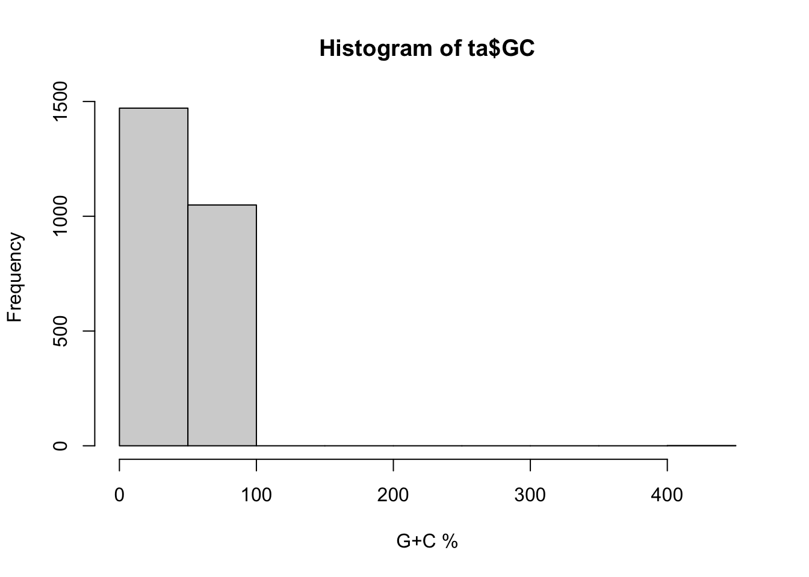
# Hay problemas (no debería ser mayor a 100%), pero dónde?
which(ta$GC>100)## [1] 1268ta[which(ta$GC>100),]## RefSeq.project.ID Project.ID Taxonomy.ID Organism.Name
## 1268 NA 29787 527018 Chlamydia trachomatis F/IC-Cal3
## Super.Kingdom Group Sequence.Status Genome.Size
## 1268 Bacteria Chlamydiae/Verrucomicrobia unfinished NA
## GC.Content Gram.Stain Shape Arrangment Endospores Motility Salinity
## 1268 413 - Rod
## Oxygen.Req Habitat Temp..range Optimal.temp. Pathogenic.in
## 1268 Host-associated Mesophilic - Human
## Disease Genbank.accessions Refseq.accessions GC
## 1268 Urogenital infections - - 413Claramente se trata de un error y podemos tomar dos caminos, eliminar el valor de nuestra variable numérica, sustituyéndolo por NA, o corregimos el valor a lo que parece ser \(41.3\). Veamos las dos, aunque nos vamos a quedar con la segunda.
# sustituir por NA (no la corremos)
# ta[which(ta$GC>100),"GC"]<-NA
# sustituir por el valor corregido
ta[which(ta$GC>100),"GC"]<-41.3
hist(ta$GC,30,xlab="G+C %")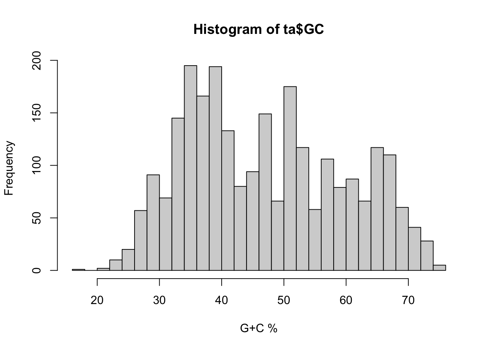
Claramente, la distribución parece ahora mucho más razonable. Veamos lo que ocurre con los tamaños de los genomas.
hist(ta$Genome.Size,xlab="Tamaño Genoma")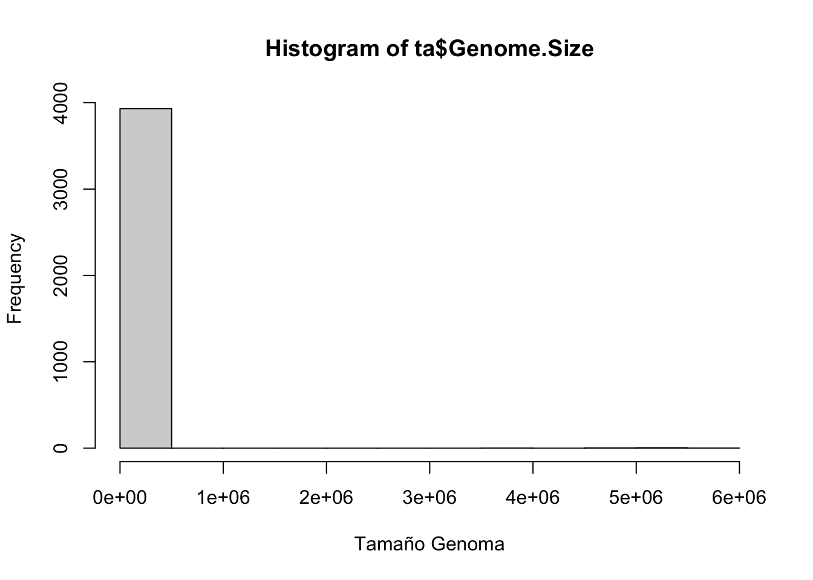
# El problema parece ser estos pocos genomas que no están expresados en MegaBases
ta[which(ta$Genome.Size>1e5),]## RefSeq.project.ID Project.ID Taxonomy.ID
## 1383 NA 61511 941968
## 1935 NA 47099 752785
## 1937 NA 47103 752787
## 2147 NA 47107 752789
## 2155 NA 47095 752783
## 4014 NA 39843 251722
## 5987 NA 60483 930944
## Organism.Name Super.Kingdom
## 1383 Clostridium botulinum H04402 065 Bacteria
## 1935 Escherichia coli 541-15 Bacteria
## 1937 Escherichia coli 576-1 Bacteria
## 2147 Escherichia coli HM605 Bacteria
## 2155 Escherichia coli KD1 Bacteria
## 4014 Pseudomonas syringae pv. aesculi Bacteria
## 5987 Yersinia enterocolitica subsp. palearctica Y11 Bacteria
## Group Sequence.Status Genome.Size GC.Content Gram.Stain
## 1383 Firmicutes unfinished 3920000
## 1935 Gammaproteobacteria unfinished 5040000 -
## 1937 Gammaproteobacteria unfinished 5200000 -
## 2147 Gammaproteobacteria unfinished 5130000
## 2155 Gammaproteobacteria unfinished 4850000
## 4014 Gammaproteobacteria unfinished 6000000 -
## 5987 Gammaproteobacteria unfinished 4550000
## Shape Arrangment Endospores Motility Salinity Oxygen.Req Habitat
## 1383
## 1935 Rod Facultative
## 1937 Rod Facultative
## 2147
## 2155
## 4014 Rod Aerobic
## 5987
## Temp..range Optimal.temp. Pathogenic.in Disease
## 1383 -
## 1935 Mesophilic -
## 1937 Mesophilic -
## 2147 -
## 2155 -
## 4014 Mesophilic - Horse Chestnut bleeding canker
## 5987 -
## Genbank.accessions Refseq.accessions GC
## 1383 - - NA
## 1935 - - NA
## 1937 - - NA
## 2147 - - NA
## 2155 - - NA
## 4014 - - NA
## 5987 - - NAta[which(ta$Genome.Size>1e4),]## RefSeq.project.ID Project.ID Taxonomy.ID
## 1383 NA 61511 941968
## 1935 NA 47099 752785
## 1937 NA 47103 752787
## 2147 NA 47107 752789
## 2155 NA 47095 752783
## 4014 NA 39843 251722
## 5987 NA 60483 930944
## Organism.Name Super.Kingdom
## 1383 Clostridium botulinum H04402 065 Bacteria
## 1935 Escherichia coli 541-15 Bacteria
## 1937 Escherichia coli 576-1 Bacteria
## 2147 Escherichia coli HM605 Bacteria
## 2155 Escherichia coli KD1 Bacteria
## 4014 Pseudomonas syringae pv. aesculi Bacteria
## 5987 Yersinia enterocolitica subsp. palearctica Y11 Bacteria
## Group Sequence.Status Genome.Size GC.Content Gram.Stain
## 1383 Firmicutes unfinished 3920000
## 1935 Gammaproteobacteria unfinished 5040000 -
## 1937 Gammaproteobacteria unfinished 5200000 -
## 2147 Gammaproteobacteria unfinished 5130000
## 2155 Gammaproteobacteria unfinished 4850000
## 4014 Gammaproteobacteria unfinished 6000000 -
## 5987 Gammaproteobacteria unfinished 4550000
## Shape Arrangment Endospores Motility Salinity Oxygen.Req Habitat
## 1383
## 1935 Rod Facultative
## 1937 Rod Facultative
## 2147
## 2155
## 4014 Rod Aerobic
## 5987
## Temp..range Optimal.temp. Pathogenic.in Disease
## 1383 -
## 1935 Mesophilic -
## 1937 Mesophilic -
## 2147 -
## 2155 -
## 4014 Mesophilic - Horse Chestnut bleeding canker
## 5987 -
## Genbank.accessions Refseq.accessions GC
## 1383 - - NA
## 1935 - - NA
## 1937 - - NA
## 2147 - - NA
## 2155 - - NA
## 4014 - - NA
## 5987 - - NA# Copiamos a una nueva variable y transformamos
ta$GS<-ta$Genome.Size
ta[which(ta$Genome.Size>1e5),"GS"]<-ta[which(ta$Genome.Size>1e5),"GS"]/1e6
# seguimos teniendo problemas
hist(ta$GS,30,xlab="Tamaño Genoma")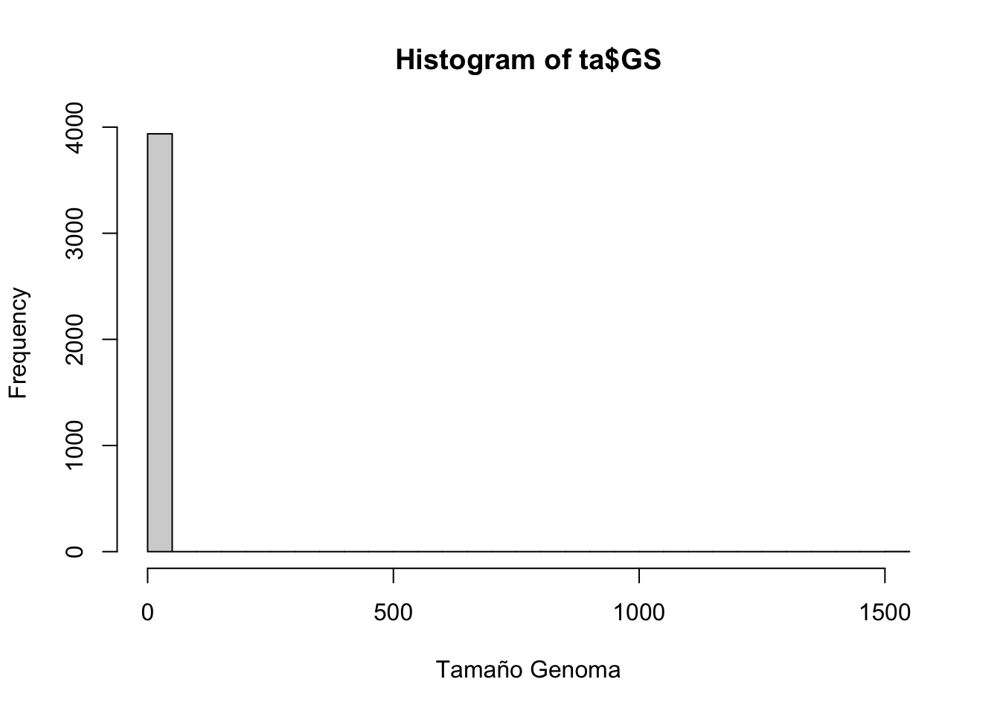
ta[which(ta$GS>10),]## RefSeq.project.ID Project.ID Taxonomy.ID
## 393 54101 299 191218
## 419 55151 29645 526967
## 420 55175 29669 526979
## 423 55201 29695 526992
## 424 55203 29697 526993
## 425 55205 29699 526994
## 429 55197 29691 526990
## 431 55161 29655 526972
## 432 55199 29693 526991
## 436 55177 29671 526980
## 439 55171 29665 526977
## 441 55173 29667 526978
## 442 55169 29663 526976
## 443 55165 29659 526974
## 444 55167 29661 526975
## 445 55157 29651 526970
## 447 55195 29689 526989
## 453 55159 29653 526971
## 457 55153 29647 526968
## 458 55181 29675 526982
## 459 55179 29673 526981
## 460 55183 29677 526983
## 461 55185 29679 526984
## 462 55187 29681 526985
## 464 55193 29687 526988
## 465 55191 29685 526987
## 469 55163 29657 526973
## 470 55155 29649 526969
## 487 55207 29701 526997
## 488 55209 29703 526998
## 489 55211 29705 526999
## 491 55213 29707 527000
## 534 55223 29717 527021
## 538 55239 29733 527019
## 539 55241 29735 527020
## 540 55231 29725 527032
## 541 55229 29723 527031
## 543 55235 29729 527030
## 546 55217 29711 527023
## 548 55215 29709 527022
## 549 55227 29721 527027
## 550 55233 29727 527029
## 551 55237 29731 527028
## 552 55221 29715 527026
## 554 55225 29719 527025
## 555 55219 29713 527024
## 953 54361 16181 357347
## 957 54285 13950 320371
## 989 54655 19251 271848
## 1218 NA 60607 208596
## 1221 59077 21085 479433
## 2241 55087 28847 502346
## 2804 49671 27943 485913
## 2967 NA 39597 661506
## 3342 55385 30907 557599
## 3783 54707 19341 391625
## 3957 60643 49667 798130
## 3967 54415 16851 388272
## 4750 61629 28111 448385
## 5086 54333 15671 378806
## 5539 NA 46847 749414
## 5540 NA 19249 443255
## 5542 47867 42475 443255
## 5548 55827 33605 457427
## 5549 NA 42363 698759
## 5552 59511 28553 457429
## 5568 59513 28555 463191
## 5569 NA 42361 698760
## 5571 52609 43031 653045
## 5573 42521 21083 479432
## 5808 54121 10620 240016
## 6076 NA 50065 860576
## Organism.Name Super.Kingdom
## 393 Bacillus anthracis str. A2012 Bacteria
## 419 Bacillus cereus 172560W Bacteria
## 420 Bacillus cereus 95/8201 Bacteria
## 423 Bacillus cereus AH1271 Bacteria
## 424 Bacillus cereus AH1272 Bacteria
## 425 Bacillus cereus AH1273 Bacteria
## 429 Bacillus cereus AH603 Bacteria
## 431 Bacillus cereus AH621 Bacteria
## 432 Bacillus cereus AH676 Bacteria
## 436 Bacillus cereus ATCC 10876 Bacteria
## 439 Bacillus cereus ATCC 4342 Bacteria
## 441 Bacillus cereus BDRD-Cer4 Bacteria
## 442 Bacillus cereus BDRD-ST196 Bacteria
## 443 Bacillus cereus BDRD-ST24 Bacteria
## 444 Bacillus cereus BDRD-ST26 Bacteria
## 445 Bacillus cereus BGSC 6E1 Bacteria
## 447 Bacillus cereus F65185 Bacteria
## 453 Bacillus cereus MM3 Bacteria
## 457 Bacillus cereus R309803 Bacteria
## 458 Bacillus cereus Rock1-15 Bacteria
## 459 Bacillus cereus Rock1-3 Bacteria
## 460 Bacillus cereus Rock3-28 Bacteria
## 461 Bacillus cereus Rock3-29 Bacteria
## 462 Bacillus cereus Rock3-42 Bacteria
## 464 Bacillus cereus Rock4-18 Bacteria
## 465 Bacillus cereus Rock4-2 Bacteria
## 469 Bacillus cereus m1293 Bacteria
## 470 Bacillus cereus m1550 Bacteria
## 487 Bacillus mycoides DSM 2048 Bacteria
## 488 Bacillus mycoides Rock1-4 Bacteria
## 489 Bacillus mycoides Rock3-17 Bacteria
## 491 Bacillus pseudomycoides DSM 12442 Bacteria
## 534 Bacillus thuringiensis Bt407 Bacteria
## 538 Bacillus thuringiensis IBL 200 Bacteria
## 539 Bacillus thuringiensis IBL 4222 Bacteria
## 540 Bacillus thuringiensis serovar andalousiensis BGSC 4AW1 Bacteria
## 541 Bacillus thuringiensis serovar berliner ATCC 10792 Bacteria
## 543 Bacillus thuringiensis serovar huazhongensis BGSC 4BD1 Bacteria
## 546 Bacillus thuringiensis serovar kurstaki str. T03a001 Bacteria
## 548 Bacillus thuringiensis serovar monterrey BGSC 4AJ1 Bacteria
## 549 Bacillus thuringiensis serovar pakistani str. T13001 Bacteria
## 550 Bacillus thuringiensis serovar pondicheriensis BGSC 4BA1 Bacteria
## 551 Bacillus thuringiensis serovar pulsiensis BGSC 4CC1 Bacteria
## 552 Bacillus thuringiensis serovar sotto str. T04001 Bacteria
## 554 Bacillus thuringiensis serovar thuringiensis str. T01001 Bacteria
## 555 Bacillus thuringiensis serovar tochigiensis BGSC 4Y1 Bacteria
## 953 Burkholderia pseudomallei 1106b Bacteria
## 957 Burkholderia pseudomallei 1710a Bacteria
## 989 Burkholderia thailandensis E264 Bacteria
## 1218 Carnobacterium sp. 17-4 Bacteria
## 1221 Catenulispora acidiphila DSM 44928 Bacteria
## 2241 Escherichia coli O157:H7 str. TW14588 Bacteria
## 2804 Ktedonobacter racemifer DSM 44963 Bacteria
## 2967 Lactobacillus rhamnosus MSUIS1 Bacteria
## 3342 Mycobacterium kansasii ATCC 12478 Bacteria
## 3783 Plesiocystis pacifica SIR-1 Bacteria
## 3957 Pseudomonas aeruginosa 39016 Bacteria
## 3967 Pseudomonas aeruginosa PACS2 Bacteria
## 4750 Sorangium cellulosum 'So ce 56' Bacteria
## 5086 Stigmatella aurantiaca DW4/3-1 Bacteria
## 5539 Streptomyces bingchenggensis BCW-1 Bacteria
## 5540 Streptomyces clavuligerus ATCC 27064 Bacteria
## 5542 Streptomyces clavuligerus ATCC 27064 Bacteria
## 5548 Streptomyces hygroscopicus ATCC 53653 Bacteria
## 5549 Streptomyces ipomoeae 91-03 Bacteria
## 5552 Streptomyces pristinaespiralis ATCC 25486 Bacteria
## 5568 Streptomyces sviceus ATCC 29083 Bacteria
## 5569 Streptomyces turgidiscabies Car8 Bacteria
## 5571 Streptomyces violaceusniger Tu 4113 Bacteria
## 5573 Streptosporangium roseum DSM 43021 Bacteria
## 5808 Verrucomicrobium spinosum DSM 4136 Bacteria
## 6076 delta proteobacterium str. anaconda Bacteria
## Group Sequence.Status Genome.Size GC.Content Gram.Stain
## 393 Firmicutes assembly 10.4686 35,3 +
## 419 Firmicutes assembly 11.3843 34,8 +
## 420 Firmicutes assembly 11.1613 35,1 +
## 423 Firmicutes assembly 11.3200 35,3 +
## 424 Firmicutes assembly 11.5479 35,2 +
## 425 Firmicutes assembly 11.5493 35,2 +
## 429 Firmicutes assembly 11.5744 35,1 +
## 431 Firmicutes assembly 11.3558 35,2 +
## 432 Firmicutes assembly 11.1632 35 +
## 436 Firmicutes assembly 11.8145 34,8 +
## 439 Firmicutes assembly 10.4243 35,2 +
## 441 Firmicutes assembly 10.7858 35,1 +
## 442 Firmicutes assembly 11.1482 35,2 +
## 443 Firmicutes assembly 10.8177 35,1 +
## 444 Firmicutes assembly 11.1498 35,3 +
## 445 Firmicutes assembly 11.4100 35 +
## 447 Firmicutes assembly 12.2065 34,7 +
## 453 Firmicutes assembly 11.0274 35,2 +
## 457 Firmicutes assembly 11.1636 35,4 +
## 458 Firmicutes assembly 11.5464 34,9 +
## 459 Firmicutes assembly 11.7428 34,9 +
## 460 Firmicutes assembly 11.9266 35,7 +
## 461 Firmicutes assembly 11.7594 34,9 +
## 462 Firmicutes assembly 10.3837 35,2 +
## 464 Firmicutes assembly 11.8060 35 +
## 465 Firmicutes assembly 11.5377 34,9 +
## 469 Firmicutes assembly 10.5456 35,3 +
## 470 Firmicutes assembly 10.4341 35,1 +
## 487 Firmicutes assembly 11.1419 35,2 +
## 488 Firmicutes assembly 11.5804 35,3 +
## 489 Firmicutes assembly 11.3829 35,4 +
## 491 Firmicutes assembly 11.5520 35,4 +
## 534 Firmicutes assembly 12.0081 34,8 +
## 538 Firmicutes assembly 13.4074 34,5 +
## 539 Firmicutes assembly 13.1741 34,9 +
## 540 Firmicutes assembly 10.9631 35,1 +
## 541 Firmicutes assembly 12.5348 34,8 +
## 543 Firmicutes assembly 12.4034 34,7 +
## 546 Firmicutes assembly 10.9939 35 +
## 548 Firmicutes assembly 12.9640 34,7 +
## 549 Firmicutes assembly 11.9758 35 +
## 550 Firmicutes assembly 12.0130 34,9 +
## 551 Firmicutes assembly 11.9768 34,9 +
## 552 Firmicutes assembly 12.1596 34,8 +
## 554 Firmicutes assembly 12.5985 34,8 +
## 555 Firmicutes assembly 11.2040 34,9 +
## 953 Betaproteobacteria assembly 14.3134 68,2 -
## 957 Betaproteobacteria assembly 14.6291 68 -
## 989 Betaproteobacteria assembly 12.7043 67,7 -
## 1218 Firmicutes unfinished 37.0000
## 1221 Actinobacteria complete 10.4678 69,8 +
## 2241 Gammaproteobacteria assembly 11.2703 50,5 -
## 2804 Other Bacteria assembly 14.0000 53,9 +
## 2967 Firmicutes unfinished 1536.0000 +
## 3342 Actinobacteria assembly 12.4005 66,1 +
## 3783 Deltaproteobacteria assembly 10.5876 70,7 -
## 3957 Gammaproteobacteria assembly 13.6000
## 3967 Gammaproteobacteria assembly 12.9924 66,3 -
## 4750 Deltaproteobacteria complete 13.0338 71,4 -
## 5086 Deltaproteobacteria assembly 10.2654 67,4 -
## 5539 Actinobacteria complete 12.0000
## 5540 Actinobacteria assembly 18.2000 +
## 5542 Actinobacteria assembly 17.1000 72,5 +
## 5548 Actinobacteria assembly 10.4663 71,2 +
## 5549 Actinobacteria unfinished 10.5000 +
## 5552 Actinobacteria assembly 15.7336 71,2 -
## 5568 Actinobacteria assembly 18.3558 70,5 +
## 5569 Actinobacteria unfinished 10.8000 70.9-72-5
## 5571 Actinobacteria assembly 11.0000
## 5573 Actinobacteria complete 10.0280 70,9 +
## 5808 Other Bacteria assembly 16.4209 60,3
## 6076 Deltaproteobacteria unfinished 10.9700
## Shape Arrangment Endospores Motility
## 393 Rod Singles, Pairs, Chains Yes Yes
## 419 Rod Yes Yes
## 420 Rod Chains Yes Yes
## 423 Rod Chains Yes Yes
## 424 Rod Chains Yes Yes
## 425 Rod Chains Yes Yes
## 429 Rod Chains Yes Yes
## 431 Rod Yes Yes
## 432 Rod Chains Yes Yes
## 436 Rod Chains Yes Yes
## 439 Rod Chains Yes Yes
## 441 Rod Chains Yes Yes
## 442 Rod Chains Yes Yes
## 443 Rod Chains Yes Yes
## 444 Rod Chains Yes Yes
## 445 Rod Yes Yes
## 447 Rod Chains Yes Yes
## 453 Rod Yes Yes
## 457 Rod Yes Yes
## 458 Rod Chains Yes Yes
## 459 Rod Chains Yes Yes
## 460 Rod Chains Yes Yes
## 461 Rod Chains Yes Yes
## 462 Rod Chains Yes Yes
## 464 Rod Chains Yes Yes
## 465 Rod Chains Yes Yes
## 469 Rod Chains Yes Yes
## 470 Rod Yes Yes
## 487 Rod Chains Yes No
## 488 Rod Chains Yes No
## 489 Rod Chains Yes No
## 491 Rod Chains Yes No
## 534 Rod Chains Yes Yes
## 538 Rod Chains Yes Yes
## 539 Rod Chains Yes Yes
## 540 Rod Chains Yes Yes
## 541 Rod Yes Yes
## 543 Rod Chains Yes Yes
## 546 Rod Chains Yes Yes
## 548 Rod Yes Yes
## 549 Rod Chains Yes Yes
## 550 Rod Chains Yes Yes
## 551 Rod Chains Yes Yes
## 552 Rod Chains Yes Yes
## 554 Rod Chains Yes Yes
## 555 Rod Chains Yes Yes
## 953 Rod Yes
## 957 Rod Yes
## 989 Rod Yes
## 1218
## 1221 Filament Yes
## 2241 Rod Yes
## 2804 Filament Branched filaments Yes No
## 2967 Rod No
## 3342 Rod No No
## 3783 Rod Yes
## 3957
## 3967 Rod Singles Yes
## 4750 Rod Singles, Aggregates Yes
## 5086 Rod Singles, Aggregates Yes Yes
## 5539 Yes
## 5540 Branched filament Filaments Yes No
## 5542 Branched filament Filaments Yes No
## 5548 Branched filament Yes No
## 5549 Branched filament Yes No
## 5552 Branched filament Filaments Yes No
## 5568 Branched filament Filaments Yes No
## 5569 Yes
## 5571 filament Yes No
## 5573 Filament Yes
## 5808 Rod Singles
## 6076
## Salinity Oxygen.Req Habitat Temp..range Optimal.temp.
## 393 Facultative Multiple Mesophilic -
## 419 Aerobic Multiple Mesophilic -
## 420 Aerobic Multiple Mesophilic -
## 423 Aerobic Multiple Mesophilic -
## 424 Aerobic Multiple Mesophilic -
## 425 Aerobic Multiple Mesophilic -
## 429 Aerobic Multiple Mesophilic -
## 431 Aerobic Multiple Mesophilic -
## 432 Aerobic Multiple Mesophilic -
## 436 Aerobic Multiple Mesophilic -
## 439 Aerobic Multiple Mesophilic -
## 441 Aerobic Multiple Mesophilic -
## 442 Aerobic Multiple Mesophilic -
## 443 Aerobic Multiple Mesophilic -
## 444 Aerobic Multiple Mesophilic -
## 445 Aerobic Multiple Mesophilic -
## 447 Aerobic Multiple Mesophilic -
## 453 Aerobic Multiple Mesophilic -
## 457 Aerobic Multiple Mesophilic -
## 458 Aerobic Multiple Mesophilic -
## 459 Aerobic Multiple Mesophilic -
## 460 Aerobic Multiple Mesophilic -
## 461 Aerobic Multiple Mesophilic -
## 462 Aerobic Multiple Mesophilic -
## 464 Aerobic Multiple Mesophilic -
## 465 Aerobic Multiple Mesophilic -
## 469 Aerobic Multiple Mesophilic -
## 470 Aerobic Multiple Mesophilic -
## 487 -
## 488 Aerobic Terrestrial Mesophilic -
## 489 Aerobic Terrestrial Mesophilic -
## 491 Aerobic Terrestrial Mesophilic -
## 534 Aerobic Multiple Mesophilic -
## 538 Aerobic Multiple Mesophilic -
## 539 Aerobic Multiple Mesophilic -
## 540 Aerobic Multiple Mesophilic -
## 541 Aerobic Multiple Mesophilic -
## 543 Aerobic Multiple Mesophilic -
## 546 Aerobic Multiple Mesophilic -
## 548 Aerobic Multiple Mesophilic -
## 549 Aerobic Multiple Mesophilic -
## 550 Aerobic Multiple Mesophilic -
## 551 Aerobic Multiple Mesophilic -
## 552 Aerobic Multiple Mesophilic -
## 554 Aerobic Multiple Mesophilic -
## 555 Aerobic Multiple Mesophilic -
## 953 Aerobic Terrestrial Mesophilic -
## 957 Aerobic Terrestrial Mesophilic -
## 989 Aerobic Terrestrial Mesophilic -
## 1218 -
## 1221 Aerobic Terrestrial Mesophilic -
## 2241 Facultative Multiple Mesophilic -
## 2804 Aerobic Terrestrial Mesophilic 28-33
## 2967 Facultative Mesophilic -
## 3342 Aerobic Multiple Mesophilic -
## 3783 Mesophilic Aerobic Aquatic Mesophilic 28-30
## 3957 -
## 3967 Non-halophilic Aerobic Multiple Mesophilic 37
## 4750 Aerobic Terrestrial Mesophilic -
## 5086 Aerobic Terrestrial Mesophilic -
## 5539 -
## 5540 Aerobic Terrestrial Mesophilic 25-35
## 5542 Aerobic Terrestrial Mesophilic -
## 5548 Aerobic Terrestrial Mesophilic -
## 5549 Aerobic Terrestrial Mesophilic -
## 5552 Aerobic Terrestrial Mesophilic -
## 5568 Aerobic Terrestrial Mesophilic -
## 5569 Host-associated -
## 5571 Aerobic Terrestrial Mesophilic -
## 5573 Aerobic Terrestrial Mesophilic -
## 5808 Facultative Multiple Mesophilic -
## 6076 Aquatic -
## Pathogenic.in Disease
## 393 Animal Anthrax
## 419 Human Food poisoning
## 420 Human Food poisoning
## 423 Human Food poisoning
## 424 Human Food poisoning
## 425 Human Food poisoning
## 429 Human Food poisoning
## 431 Human Food poisoning
## 432 Human Food poisoning
## 436 Human Food poisoning
## 439 Human Food poisoning
## 441 Human Food poisoning
## 442 Human Food poisoning
## 443 Human Food poisoning
## 444 Human Food poisoning
## 445 Human Food poisoning
## 447 Human Food poisoning
## 453 Human Food poisoning
## 457 Human Food poisoning
## 458 Human Food poisoning
## 459 Human Food poisoning
## 460 Human Food poisoning
## 461 Human Food poisoning
## 462 Human Food poisoning
## 464 Human Food poisoning
## 465 Human Food poisoning
## 469 Human Food poisoning
## 470 Human Food poisoning
## 487 No
## 488 No
## 489 No
## 491 No
## 534 Insect Sotto disease
## 538 Insect Sotto disease
## 539 Insect Sotto disease
## 540 Insect Sotto disease
## 541 Insect Sotto disease
## 543 Insect Sotto disease
## 546 Insect Sotto disease
## 548 Insect Sotto disease
## 549 Insect Sotto disease
## 550 Insect Sotto disease
## 551 Insect Sotto disease
## 552 Insect Sotto disease
## 554 Insect Sotto disease
## 555 Insect Sotto disease
## 953 Animal Melioidosis
## 957 Animal Melioidosis
## 989 No
## 1218
## 1221 No
## 2241 Human Hemorrhagic colitis
## 2804 No
## 2967
## 3342 Human Tuberculosis type pulmonary infections
## 3783
## 3957
## 3967 Human Nocosomial infections
## 4750 No
## 5086 No None
## 5539
## 5540
## 5542
## 5548 No
## 5549 Plant Sweet potato soil rot
## 5552 No
## 5568 No
## 5569 common scab
## 5571
## 5573 No
## 5808 No
## 6076
## Genbank.accessions
## 393 AAAC01000001,AE011191,AE011190,AAAC00000000
## 419 CM000717,ACLV00000000
## 420 CM000727,ACMF00000000
## 423 CM000739,ACMR00000000
## 424 CM000740,ACMS00000000
## 425 CM000741,ACMT00000000
## 429 CM000737,ACMP00000000
## 431 CM000719,ACLX00000000
## 432 CM000738,ACMQ00000000
## 436 CM000715,ACLT00000000
## 439 CM000721,ACLZ00000000
## 441 CM000726,ACME00000000
## 442 CM000725,ACMD00000000
## 443 CM000723,ACMB00000000
## 444 CM000724,ACMC00000000
## 445 CM000716,ACLU00000000
## 447 CM000736,ACMO00000000
## 453 CM000718,ACLW00000000
## 457 CM000720,ACLY00000000
## 458 CM000729,ACMH00000000
## 459 CM000728,ACMG00000000
## 460 CM000730,ACMI00000000
## 461 CM000731,ACMJ00000000
## 462 CM000732,ACMK00000000
## 464 CM000735,ACMN00000000
## 465 CM000734,ACMM00000000
## 469 CM000714,ACLS00000000
## 470 CM000722,ACMA00000000
## 487 CM000742,ACMU00000000
## 488 CM000743,ACMV00000000
## 489 CM000744,ACMW00000000
## 491 CM000745,ACMX00000000
## 534 CM000747,ACMZ00000000
## 538 CM000758,ACNK00000000
## 539 CM000759,ACNL00000000
## 540 CM000754,ACNG00000000
## 541 CM000753,ACNF00000000
## 543 CM000756,ACNI00000000
## 546 CM000751,ACND00000000
## 548 CM000752,ACNE00000000
## 549 CM000750,ACNC00000000
## 550 CM000755,ACNH00000000
## 551 CM000757,ACNJ00000000
## 552 CM000749,ACNB00000000
## 554 CM000748,ACNA00000000
## 555 CM000746,ACMY00000000
## 953 CM000775,CM000774,AAMB00000000
## 957 CM000832,CM000833,AAHS00000000
## 989 CM000438,CM000439,AACX00000000
## 1218 -
## 1221 CP001700
## 2241 CM000662,ABKY00000000
## 2804 ADVG00000000
## 2967 -
## 3342 CM000636,ACBV00000000
## 3783 ABCS00000000
## 3957 AEEX00000000,CM001020
## 3967 AAQW01000001,AAQW00000000
## 4750 AM746676
## 5086 AAMD00000000
## 5539 CP002047
## 5540 CM001015,CM001016,ADWJ00000000,CM001017,CM001018,CM001019
## 5542 CM000913,CM000914,ADGD00000000
## 5548 ACEX00000000
## 5549 -
## 5552 CM000950,ABJI00000000
## 5568 CM000951,ABJJ00000000
## 5569 -
## 5571 AEDI00000000
## 5573 CP001814,CP001815
## 5808 ABIZ01000001,ABIZ00000000
## 6076 -
## Refseq.accessions GC GS
## 393 - 35.3 10.4686
## 419 - 34.8 11.3843
## 420 - 35.1 11.1613
## 423 - 35.3 11.3200
## 424 - 35.2 11.5479
## 425 - 35.2 11.5493
## 429 - 35.1 11.5744
## 431 - 35.2 11.3558
## 432 - 35.0 11.1632
## 436 - 34.8 11.8145
## 439 - 35.2 10.4243
## 441 - 35.1 10.7858
## 442 - 35.2 11.1482
## 443 - 35.1 10.8177
## 444 - 35.3 11.1498
## 445 - 35.0 11.4100
## 447 - 34.7 12.2065
## 453 - 35.2 11.0274
## 457 - 35.4 11.1636
## 458 - 34.9 11.5464
## 459 - 34.9 11.7428
## 460 - 35.7 11.9266
## 461 - 34.9 11.7594
## 462 - 35.2 10.3837
## 464 - 35.0 11.8060
## 465 - 34.9 11.5377
## 469 - 35.3 10.5456
## 470 - 35.1 10.4341
## 487 - 35.2 11.1419
## 488 - 35.3 11.5804
## 489 - 35.4 11.3829
## 491 - 35.4 11.5520
## 534 - 34.8 12.0081
## 538 - 34.5 13.4074
## 539 - 34.9 13.1741
## 540 - 35.1 10.9631
## 541 - 34.8 12.5348
## 543 - 34.7 12.4034
## 546 - 35.0 10.9939
## 548 - 34.7 12.9640
## 549 - 35.0 11.9758
## 550 - 34.9 12.0130
## 551 - 34.9 11.9768
## 552 - 34.8 12.1596
## 554 - 34.8 12.5985
## 555 - 34.9 11.2040
## 953 - 68.2 14.3134
## 957 - 68.0 14.6291
## 989 - 67.7 12.7043
## 1218 - NA 37.0000
## 1221 - 69.8 10.4678
## 2241 - 50.5 11.2703
## 2804 - 53.9 14.0000
## 2967 - NA 1536.0000
## 3342 - 66.1 12.4005
## 3783 - 70.7 10.5876
## 3957 - NA 13.6000
## 3967 - 66.3 12.9924
## 4750 - 71.4 13.0338
## 5086 - 67.4 10.2654
## 5539 - NA 12.0000
## 5540 - NA 18.2000
## 5542 - 72.5 17.1000
## 5548 - 71.2 10.4663
## 5549 - NA 10.5000
## 5552 - 71.2 15.7336
## 5568 - 70.5 18.3558
## 5569 - NA 10.8000
## 5571 - NA 11.0000
## 5573 - 70.9 10.0280
## 5808 - 60.3 16.4209
## 6076 - NA 10.9700# vemos que el problema es con las unfinished y con las assembly por lo que vamos a ser drásticos
ta[which(ta$Sequence.Status%in%c("assembly","unfinished")),"GS"]<-NA
hist(ta$GS,30,xlab="Tamaño Genoma")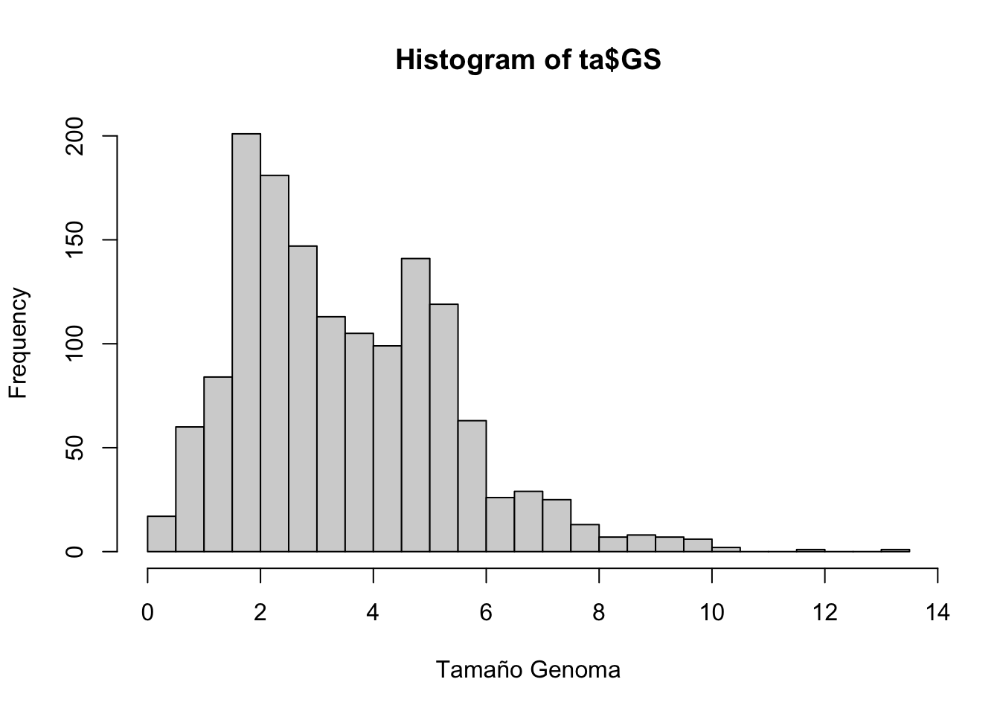
Ahora que tenemos ambas variables en forma relativamente prolija podemos jugar un poco con las hipótesis biológicas. Veamos si existe una relación entre el contenido G+C y el tamaño del genoma.
plot(ta$GC,ta$GS,xlab="G+C",ylab="Tamaño Genoma",cex=0.75,pch=21,col="red",bg="blue")
abline(lm(GS~GC,data=ta),lty=2)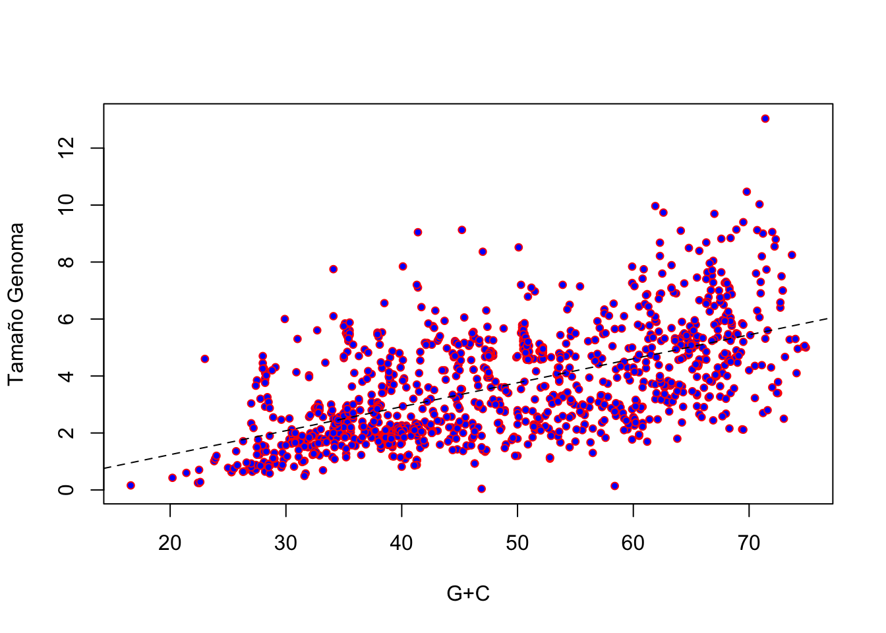
summary(lm(GS~GC,data=ta))##
## Call:
## lm(formula = GS ~ GC, data = ta)
##
## Residuals:
## Min 1Q Median 3Q Max
## -4.3292 -1.0666 -0.3605 0.9814 7.4714
##
## Coefficients:
## Estimate Std. Error t value Pr(>|t|)
## (Intercept) -0.442174 0.169538 -2.608 0.00922 **
## GC 0.084098 0.003387 24.828 < 2e-16 ***
## ---
## Signif. codes: 0 '***' 0.001 '**' 0.01 '*' 0.05 '.' 0.1 ' ' 1
##
## Residual standard error: 1.545 on 1203 degrees of freedom
## (4898 observations deleted due to missingness)
## Multiple R-squared: 0.3388, Adjusted R-squared: 0.3383
## F-statistic: 616.4 on 1 and 1203 DF, p-value: < 2.2e-16
¿Existe una relación? ¿Es lineal? ¿Se cumplen los supuestos básicos para que el ajuste por mínimos cuadrados de la regresión lineal sea una buena opción? ¿Cuanto de la varianza en tamaño del genoma queda explicado por el contenido G+C? ¿Desde el punto de vista biológico, el contenido G+C explicaría el tamaño o el tamaño el contenido G+C? ¿Esta forma de analizar la relación entre las variables tiene en cuenta la inercia filogenética?
Otra hipótesis interesante es que la que relaciona el contenido G+C con los requerimientos de oxígeno de los diferentes organismos procariotas. Veamos primero en forma gráfica si existe algo parecido a dicha relación.
table(ta$Oxygen.Req)##
## Aerobic Anaerobic Facultative Microaerophilic
## 2818 1063 792 1301 129boxplot(GC~Oxygen.Req,data=ta,notch=TRUE,varwidth=TRUE,col=c("gray","blue","red","violet","green"),xlab="requerimiento oxígeno")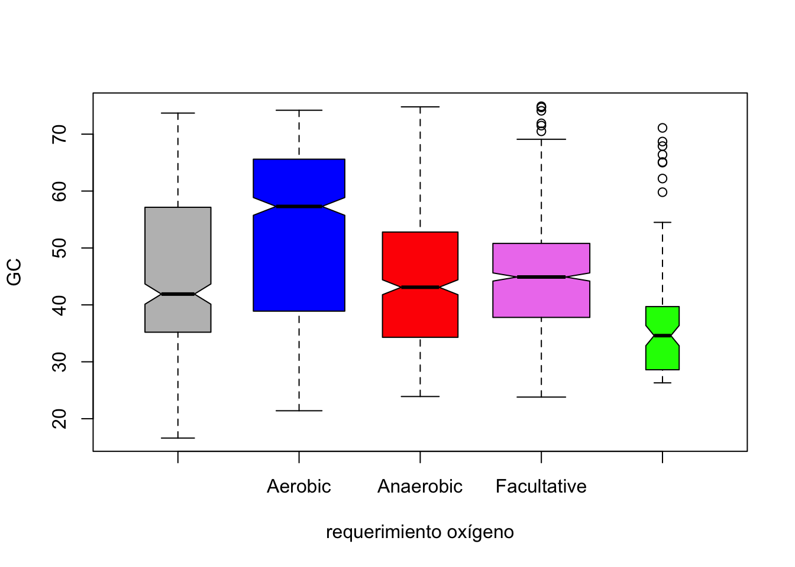
kruskal.test(GC~Oxygen.Req,data=ta)##
## Kruskal-Wallis rank sum test
##
## data: GC by Oxygen.Req
## Kruskal-Wallis chi-squared = 256.95, df = 4, p-value < 2.2e-16
En principio existe una relación. ¿Que tipo de requerimiento de oxígeno se asocia a un mayor contenido G+C? ¿Es estadísticamente significativa la relación? ¿Qué problemas tiene el enfoque que adoptamos aquí?
Veamos que ocurre si nos metemos adentro de los principales grupos representados en la tabla.
sort(table(ta$Group),TRUE)##
## Firmicutes Gammaproteobacteria
## 1833 1766
## Actinobacteria Alphaproteobacteria
## 540 427
## Betaproteobacteria Bacteroidetes/Chlorobi
## 278 252
## Epsilonproteobacteria Euryarchaeota
## 233 135
## Other Bacteria Cyanobacteria
## 109 106
## Chlamydiae/Verrucomicrobia Deltaproteobacteria
## 83 82
## Spirochaetes Crenarchaeota
## 75 47
## Fusobacteria Chloroflexi
## 35 21
## Deinococcus-Thermus Thermotogae
## 19 19
## Aquificae Planctomycetes
## 16 10
## Acidobacteria Other Archaea
## 9 6
## Nanoarchaeota Tenericutes
## 1 1# Firmicutes
boxplot(GC~Oxygen.Req,data=ta[ta$Group=="Firmicutes",],notch=TRUE,varwidth=TRUE,col=c("gray","blue","red","violet","green"),xlab="requerimiento oxígeno")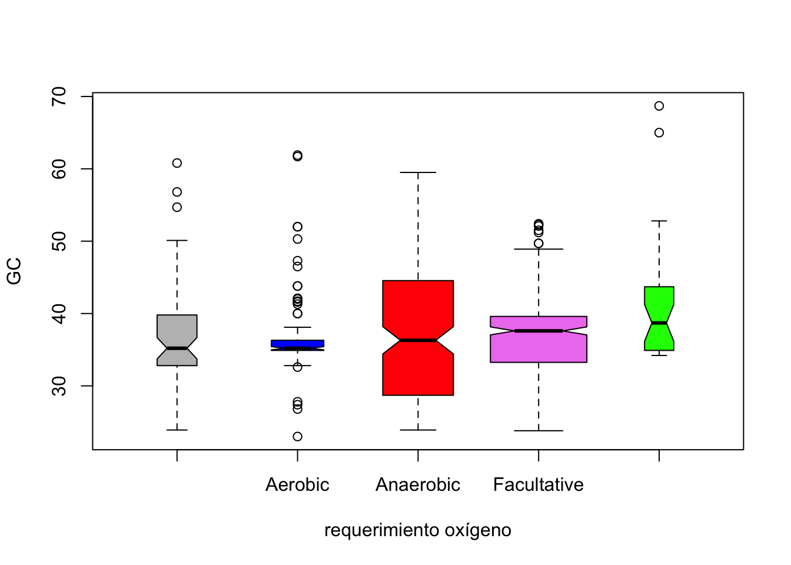
kruskal.test(GC~Oxygen.Req,data=ta[ta$Group=="Firmicutes",])##
## Kruskal-Wallis rank sum test
##
## data: GC by Oxygen.Req
## Kruskal-Wallis chi-squared = 9.3339, df = 4, p-value = 0.05327# Gammaproteobacteria
boxplot(GC~Oxygen.Req,data=ta[ta$Group=="Gammaproteobacteria",],notch=TRUE,varwidth=TRUE,col=c("gray","blue","red","violet","green"),xlab="requerimiento oxígeno")## Warning in (function (z, notch = FALSE, width = NULL, varwidth = FALSE, : some
## notches went outside hinges ('box'): maybe set notch=FALSE
kruskal.test(GC~Oxygen.Req,data=ta[ta$Group=="Gammaproteobacteria",])##
## Kruskal-Wallis rank sum test
##
## data: GC by Oxygen.Req
## Kruskal-Wallis chi-squared = 6.4809, df = 4, p-value = 0.166# Actinobacteria
boxplot(GC~Oxygen.Req,data=ta[ta$Group=="Actinobacteria",],notch=TRUE,varwidth=TRUE,col=c("gray","blue","red","violet","green"),xlab="requerimiento oxígeno")## Warning in (function (z, notch = FALSE, width = NULL, varwidth = FALSE, : some
## notches went outside hinges ('box'): maybe set notch=FALSE
kruskal.test(GC~Oxygen.Req,data=ta[ta$Group=="Actinobacteria",])##
## Kruskal-Wallis rank sum test
##
## data: GC by Oxygen.Req
## Kruskal-Wallis chi-squared = 86.959, df = 4, p-value < 2.2e-16# Alphaproteobacteria
boxplot(GC~Oxygen.Req,data=ta[ta$Group=="Alphaproteobacteria",],notch=TRUE,varwidth=TRUE,col=c("gray","blue","red","violet","green"),xlab="requerimiento oxígeno")## Warning in (function (z, notch = FALSE, width = NULL, varwidth = FALSE, : some
## notches went outside hinges ('box'): maybe set notch=FALSE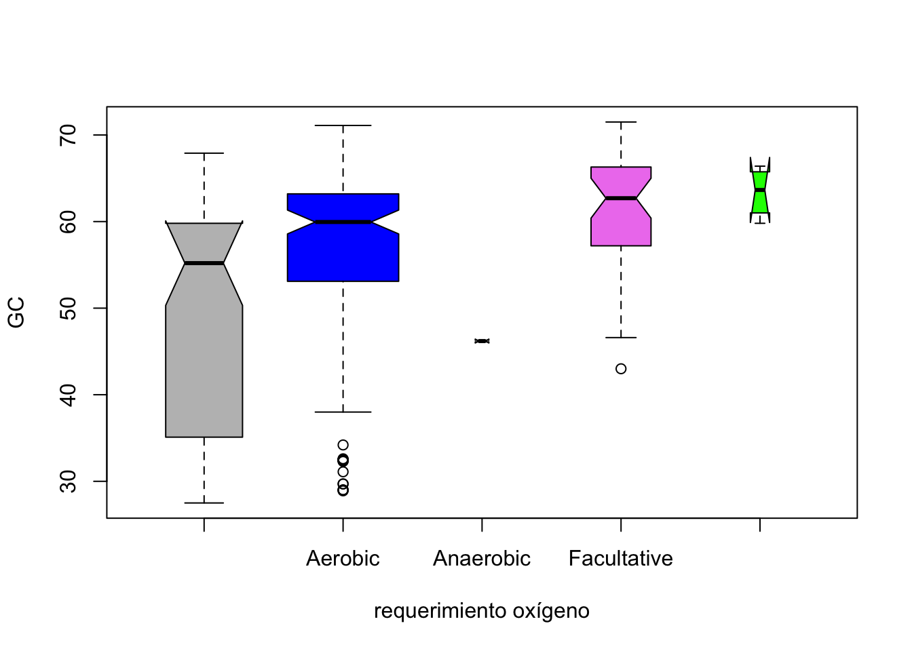
kruskal.test(GC~Oxygen.Req,data=ta[ta$Group=="Alphaproteobacteria",])##
## Kruskal-Wallis rank sum test
##
## data: GC by Oxygen.Req
## Kruskal-Wallis chi-squared = 28.307, df = 4, p-value = 1.081e-05# Betaproteobacteria
boxplot(GC~Oxygen.Req,data=ta[ta$Group=="Betaproteobacteria",],notch=TRUE,varwidth=TRUE,col=c("gray","blue","red","violet","green"),xlab="requerimiento oxígeno")## Warning in (function (z, notch = FALSE, width = NULL, varwidth = FALSE, : some
## notches went outside hinges ('box'): maybe set notch=FALSE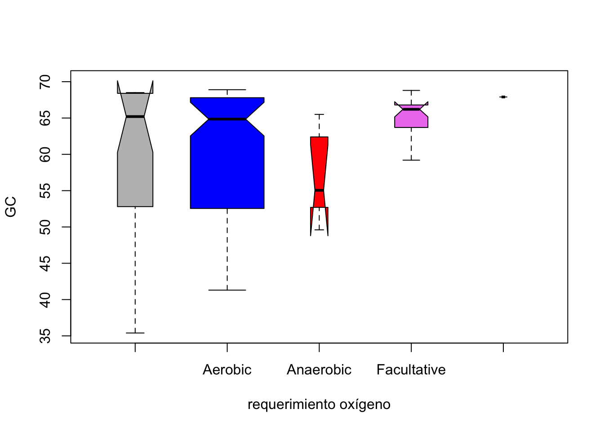
kruskal.test(GC~Oxygen.Req,data=ta[ta$Group=="Betaproteobacteria",])##
## Kruskal-Wallis rank sum test
##
## data: GC by Oxygen.Req
## Kruskal-Wallis chi-squared = 5.0019, df = 4, p-value = 0.2871
Podríamos seguir con todos los grupos, o más fácil aún hacer un script mínimo para mandar todos los grupos a un PDF y ahí mirarlos con claridad, pero el mensaje es suficientemente claro: la situación es muy distinta para cada grupo filogenético y es necesario trabajar de una forma que ponga la información filogenética en juego. Esto será tema de otro capítulo, por lo que dejamos este punto de lado ahora.
Por último, veamos la situación de la patogenicidad en esta tabla. Con un par de comandos es fácil percibir que trabajar con estos datos precisará de un buen trabajo adicional.
# las entradas contienen información multiple y es necesario parsearla
table(ta$Pathogenic.in)##
##
## 3671
## Acanthamoeba polyphaga
## 1
## Alligators
## 2
## Animal
## 77
## Animal, Human
## 9
## Animals, human
## 2
## Animals, Human
## 2
## Asian pear
## 3
## Avian
## 3
## Bee
## 1
## Birds
## 1
## bivalve mollusk larvae
## 1
## Bovine
## 4
## carrot
## 1
## Catfish
## 1
## Cattle
## 11
## Cattle, Human
## 2
## Chicken
## 1
## Chimpanzee
## 1
## Citrus
## 4
## Coral
## 1
## Corn
## 1
## Crab
## 1
## Cyst-forming nematodes
## 1
## Dog
## 1
## Dog, Human
## 1
## Equine
## 3
## Feline
## 2
## Ferret
## 2
## Fis
## 1
## Fish
## 2
## Fish, Human
## 3
## Fish, Human, Animals
## 5
## Fish, Shellfish
## 2
## Fish, Shellfish, Cattle, Human
## 2
## Frogs
## 1
## Fruit
## 1
## Goats
## 1
## Gram-negative bacteria
## 1
## Grape vines
## 1
## Grapevines
## 1
## Honey bea
## 1
## Honey bee
## 3
## Horse
## 1
## Horse Chestnut
## 1
## Horses
## 2
## human
## 1
## Human
## 954
## Human, Animal
## 147
## Human, Animal, Insect
## 2
## Human, Animal, Plant
## 2
## Human, Animals
## 21
## Human, cattle
## 1
## Human, Cattle
## 2
## Human, Cattle, Rodent
## 1
## Human, Feline
## 1
## Human, Fowl
## 1
## Human, Horses
## 2
## Human, Marine animal
## 1
## Human, Mice
## 1
## Human, multiple
## 1
## Human, Plants
## 1
## Human, Primate
## 3
## Human, Rodent
## 18
## Human, Sheep
## 2
## Human, Swine
## 4
## Indian Chestnut, Horse Chestnut
## 1
## Insect
## 22
## Maloid fruit trees
## 3
## Mammal
## 15
## Mammal, Insect, Plant
## 1
## Mammals
## 1
## Mammel
## 1
## Marine organisms
## 1
## Mice
## 2
## Mice, Human
## 1
## Mosquito
## 1
## Mouse
## 1
## Mushrooms
## 2
## No
## 912
## non-human primates
## 2
## None
## 2
## Onion
## 1
## Plant
## 35
## plants
## 1
## Plants
## 9
## Porcine
## 23
## Poultry
## 1
## Rabbit
## 2
## Rat
## 3
## Rice
## 6
## Rodent
## 2
## Rodents
## 1
## Ruminant
## 6
## Ruminants
## 1
## Salmonid fish
## 4
## Sheep
## 4
## Sheep, Goat
## 4
## Sheep, goats
## 1
## Sheep, Goats
## 1
## Shellfish
## 1
## Solanaceae
## 1
## Sugar cane
## 1
## Swine
## 7
## Swine, Human
## 6
## Tobacco
## 2
## Tomato
## 1
## Vertebrate and invertebrate aquatic organisms
## 2
## Yes
## 3# para ver los componentes individuales podemos hacer
sort(table(gsub(" ","",unlist(lapply(ta$Pathogenic.in,function(x) strsplit(x,","))))),TRUE)##
## Human
## 1196
## No
## 912
## Animal
## 237
## Plant
## 38
## Animals
## 30
## Insect
## 25
## Porcine
## 23
## Rodent
## 21
## Cattle
## 18
## Swine
## 17
## Mammal
## 16
## Fish
## 14
## Sheep
## 12
## Plants
## 10
## Rice
## 6
## Ruminant
## 6
## Shellfish
## 5
## Bovine
## 4
## Citrus
## 4
## Goat
## 4
## Horses
## 4
## Mice
## 4
## Salmonidfish
## 4
## Asianpear
## 3
## Avian
## 3
## Equine
## 3
## Feline
## 3
## Honeybee
## 3
## human
## 3
## Maloidfruittrees
## 3
## Primate
## 3
## Rat
## 3
## Yes
## 3
## Alligators
## 2
## Dog
## 2
## Ferret
## 2
## Goats
## 2
## Grapevines
## 2
## HorseChestnut
## 2
## Mushrooms
## 2
## non-humanprimates
## 2
## None
## 2
## Rabbit
## 2
## Tobacco
## 2
## Vertebrateandinvertebrateaquaticorganisms
## 2
## Acanthamoebapolyphaga
## 1
## Bee
## 1
## Birds
## 1
## bivalvemollusklarvae
## 1
## carrot
## 1
## Catfish
## 1
## cattle
## 1
## Chicken
## 1
## Chimpanzee
## 1
## Coral
## 1
## Corn
## 1
## Crab
## 1
## Cyst-formingnematodes
## 1
## Fis
## 1
## Fowl
## 1
## Frogs
## 1
## Fruit
## 1
## goats
## 1
## Gram-negativebacteria
## 1
## Honeybea
## 1
## Horse
## 1
## IndianChestnut
## 1
## Mammals
## 1
## Mammel
## 1
## Marineanimal
## 1
## Marineorganisms
## 1
## Mosquito
## 1
## Mouse
## 1
## multiple
## 1
## Onion
## 1
## plants
## 1
## Poultry
## 1
## Rodents
## 1
## Ruminants
## 1
## Solanaceae
## 1
## Sugarcane
## 1
## Tomato
## 1# sin pretender ser exhaustivos solo a modo de ejemplo
# podemos dividir en animales y no animales (seguro falta alguno en animal que quedo del otro lado)
anima<-grep("Human|human|Animal|animal|Primate|primate|Mice|Poultry|Dog|Bovine|Feline|cattle|Mouse|Rat|Avian|Rodent|goats|Horse|Mammals|Mammel|Ruminants|Rabbit|non-humanprimates|Birds|Swine|Porcine|Fish",ta$Pathogenic.in)
noanima<-grep("Human|human|Animal|animal|Primate|primate|Mice|Poultry|Dog|Bovine|Feline|cattle|Mouse|Rat|Avian|Rodent|goats|Horse|Mammals|Mammel|Ruminants|Rabbit|non-humanprimates|Birds|Swine|Porcine|Fish",ta$Pathogenic.in,invert=TRUE)
length(anima)## [1] 1344length(noanima)## [1] 4759# comparación de contenido G+C
ta$ANIMA<-NA
ta[anima,"ANIMA"]<-"animal"
ta[noanima,"ANIMA"]<-"no-animal"
boxplot(GC~ANIMA,data=ta,notch=TRUE,col=c("red","green"),varwidth=TRUE,xlab="",main="Pathogenic-in")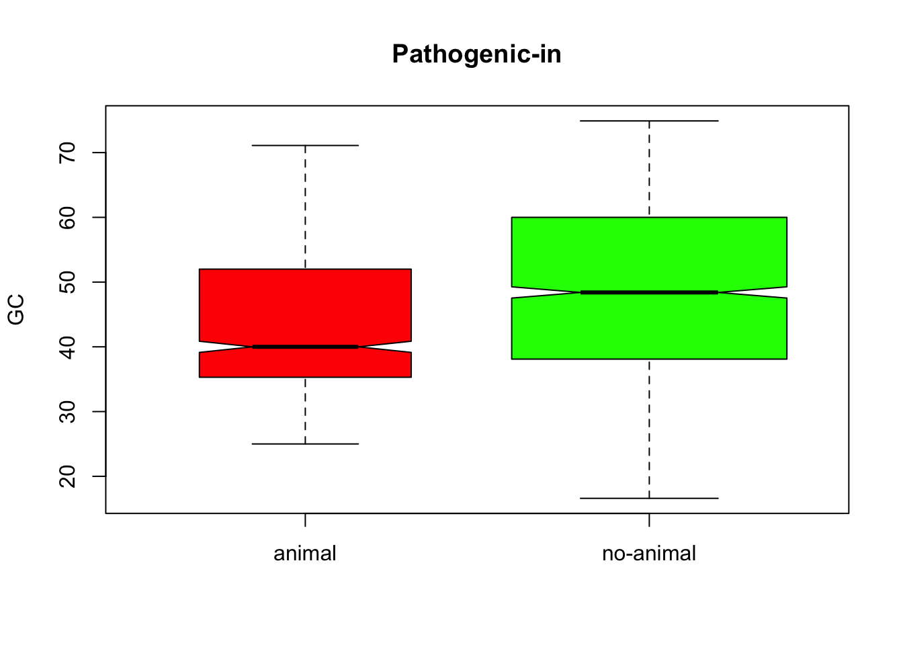
kruskal.test(GC~ANIMA,data=ta)##
## Kruskal-Wallis rank sum test
##
## data: GC by ANIMA
## Kruskal-Wallis chi-squared = 85.381, df = 1, p-value < 2.2e-16# comparación de tamaño genómico
boxplot(GS~ANIMA,data=ta,notch=TRUE,col=c("red","green"),varwidth=TRUE,xlab="",main="Pathogenic-in")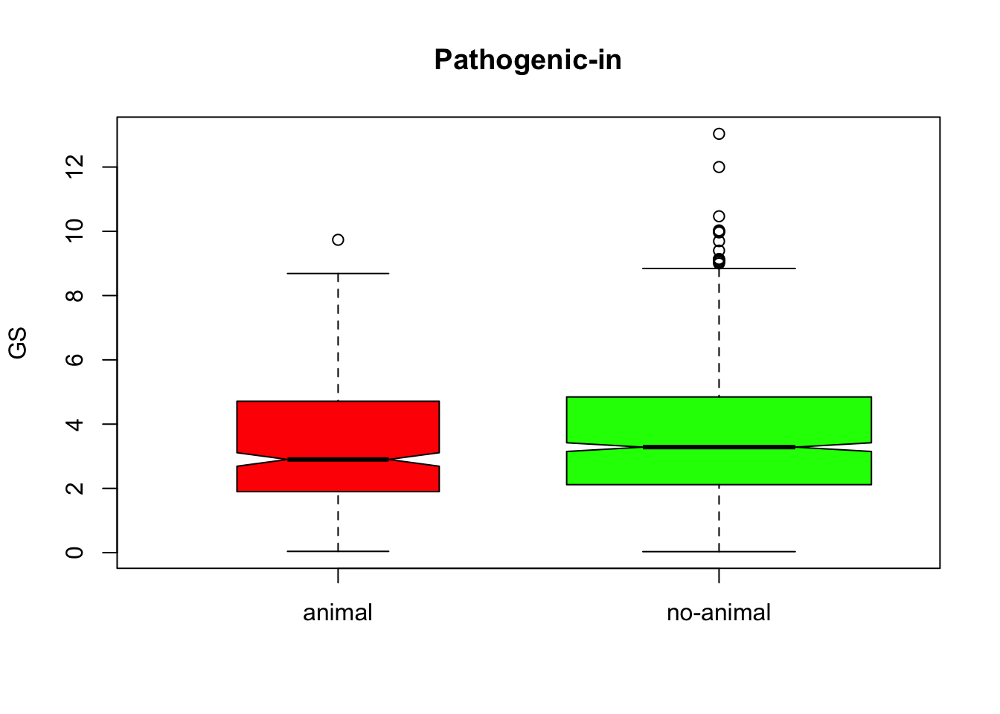
kruskal.test(GS~ANIMA,data=ta)##
## Kruskal-Wallis rank sum test
##
## data: GS by ANIMA
## Kruskal-Wallis chi-squared = 11.066, df = 1, p-value = 0.0008793# Tipo de patógeno en función del grupo
table(ta$Group,ta$ANIMA)##
## animal no-animal
## Acidobacteria 0 9
## Actinobacteria 139 401
## Alphaproteobacteria 102 325
## Aquificae 0 16
## Bacteroidetes/Chlorobi 17 235
## Betaproteobacteria 88 190
## Chlamydiae/Verrucomicrobia 56 27
## Chloroflexi 0 21
## Crenarchaeota 0 47
## Cyanobacteria 3 103
## Deinococcus-Thermus 0 19
## Deltaproteobacteria 1 81
## Epsilonproteobacteria 50 183
## Euryarchaeota 0 135
## Firmicutes 371 1462
## Fusobacteria 10 25
## Gammaproteobacteria 443 1323
## Nanoarchaeota 0 1
## Other Archaea 0 6
## Other Bacteria 15 94
## Planctomycetes 0 10
## Spirochaetes 49 26
## Tenericutes 0 1
## Thermotogae 0 19
¿Qué conclusiones preliminares podemos sacar acerca de los patógenos animales versus los no-animales? Intenta mejorar la lista previa, incluyendo los patógenos animales que faltan y sacándolos de la otra lista (la de no-animales) y compara los resultados con los previos.
A partir de los datos de esta tabla (que no necesariamente reflejan la realidad biológica) ¿Qué grupos de patógenos son exclusivamente de no-animales? ¿Cuáles son preferencialmente de animales?
Como resumen de esta parte, hemos explorado distintos metadatos a partir de una tabla y sacado algunas conclusiones que tienen que ver con el contenido G+C, el tamaño genómico y la patogenicidad. En nuestro caso se trata de una tabla muy vieja, con genomas aún sin finalizar y el objetivo fue de docencia, pero actualizando la información disponible en diferentes bases de datos es posible encontrar relaciones muy interesantes, que para explotar de manera adecuada debemos incoporar la inercia filogenética, un tema para otro capítulo.
References
El contenido GC se calcula usualmente como \(GC=(N_C+N_G)/(N_A+N_C+N_G+N_T)\), donde \(N_A\)...\(N_T\) corresponde al número de veces que aparece cada base en una secuencia.↩︎
El \(GC_{skew}\) se calcula tomando una ventana de tamaño determinado y de acuerdo con la siguiente expresión: \(GC_{skew}=(N_G-N_C)/(N_G+N_C)\).↩︎